Tencent WorkBuddy Bench: A Multi-Domain Coding-Agent Benchmark with Contamination-Resistant Task Construction
腾讯 WorkBuddy Bench：抗污染任务构造的多域编码 Agent 基准
代码/前端/办公文件/安全审计四赛道 260 题，从真实提交记录逆向改写防背题，题目、评分代码、参考答案全开源。
翻译范围：正文全部段落走三步精翻（直译→反思→雅化）；脚注与参考文献不译；公式、数字、模型名、数据集名、引用标记按原文 Unicode 保真；表格还原为可复制文本。
Tencent WorkBuddy Bench腾讯 WorkBuddy Bench
A Multi-Domain Coding-Agent Benchmark with Contamination-Resistant
多领域编码 Agent 基准：具备抗污染
Task Construction任务构造
Tencent WorkBuddy Bench Team腾讯 WorkBuddy Bench 团队
Youtu Lab · Keen Security Lab · Workbuddy · Yunding Security Lab
Youtu Lab · Keen Security Lab · Workbuddy · Yunding Security Lab
Project page § Code õ Dataset P Report
项目主页 § 代码 õ 数据集 P 报告
July 24, 20262026 年 7 月 24 日
arXiv:2607.20911v1 [cs.CL] 23 Jul 2026arXiv:2607.20911v1 [cs.CL] 23 Jul 2026
Abstract. In this paper we introduce Tencent WorkBuddy Bench, a multi-domain evaluation suite for coding agents; this report documents its construction methodology, scoring protocol, and a cross-model leaderboard. At its core is a unified evaluation framework for constructing and running distribution-informed coding-agent tasks across four work domains – Code, Web, Office, and Security. Rather than adapting public issue text, every task is reverse-engineered from a real commit, pull request, or business scenario and rewritten as a short, colloquial, role-played request, so that a task’s prompt is not recoverable by web-searching the underlying issue, pull request, or commit thread. Because the dataset is released openly – task directories, environment images, evaluation harness, tests, and reference solutions – contamination resistance rests on this construction together with dataset versioning rather than on secrecy. The four subsets – repository- level engineering, front-end development, office and business workflows, and red-/blue-team security – probe complementary facets of real work, each with its own verification style. All are packaged in a uniform task-directory format and run, under a uniform and reproducible protocol, on two agent harnesses (CodeBuddy Code and Claude Code); the full open release makes the benchmark reproducible end to end and directly auditable, since any third party can re-run each task and inspect its content. Because each subset uses a different scoring instrument, scores are not comparable across subsets and the suite reports no suite-wide average. We report a cross-model leaderboard across several model families.
摘要。本文提出腾讯 WorkBuddy Bench——一套面向编码 Agent 的多领域评测套件，并记录其构造方法、打分协议与跨模型排行榜。其核心是一个统一评测框架，在 Code、Web、Office、Security 四个工作领域构造并运行以真实分布为依据的编码 Agent 任务。任务并非改写自公开 issue 文本，而是从真实 commit、pull request 或业务场景逆向推导，再改写为简短、口语化的角色扮演式请求，因而提示词无法通过检索底层 issue、pull request 或 commit 讨论串复原。数据集完全开放——任务目录、环境镜像、评测 harness、测试与参考解答悉数公开——抗污染能力因此来自构造机制与数据集版本管理，而非保密。四个子集分别覆盖仓库级工程、前端开发、办公与业务工作流、红蓝队安全，从互补侧面考察真实工作，各具验证风格。所有子集采用统一的任务目录格式，在统一、可复现的协议下运行于 CodeBuddy Code 与 Claude Code 两个 Agent harness；全面开源使基准可端到端复现、可直接审计，任何第三方都能重跑每个任务并核查其内容。各子集打分工具不同，分数跨子集不可比，套件不提供全套件平均分。我们报告覆盖多个模型家族的跨模型排行榜。
1Introduction1 引言
Coding agents are weighed today against two very different kinds of benchmark, each with a different trade-off. Static, public suites such as SWE-bench and SWE-bench Verified [1, 2] fix a task set at release time: their problem statements, and often their solutions, circulate openly on the web, so a rising score can reflect memorization of a specific issue thread or pull request rather than genuine repository-level reasoning, and their scope is narrow – overwhelmingly single-issue bug resolution. The same crawlability problem holds beyond code: benchmarks for front-end generation [3] and web agents [4] draw on public repositories, screenshots, and websites that are themselves crawlable. Vendor production benchmarks such as CursorBench [5] take the opposite
当前衡量编码 Agent 的基准有两类，取舍迥异。以 SWE-bench 与 SWE-bench Verified [1, 2] 为代表的静态公开套件在发布时即固化任务集：问题陈述乃至解答都在网上公开流传，分数上涨可能只反映对特定 issue 讨论串或 pull request 的记忆，而非真正的仓库级推理；其覆盖面也窄——绝大多数是单 issue 缺陷修复。可爬取性问题并不限于代码：前端生成 [3] 与 Web Agent [4] 的基准同样取材于本身可被爬取的公开仓库、截图与网站。CursorBench [5] 等厂商生产类基准则走向另一极端，
TENCENT WORKBUDDY BENCH Technical Report · 2026
腾讯 WorkBuddy Bench 技术报告 · 2026
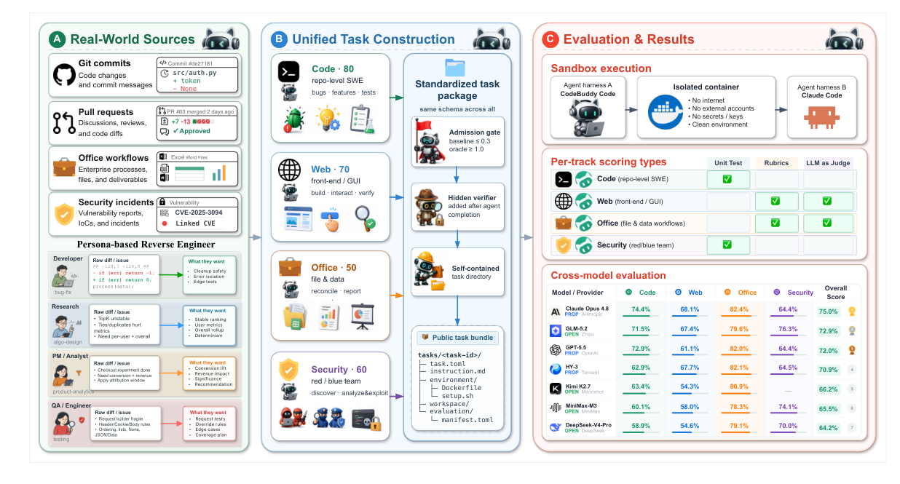
Figure 1. Tencent WorkBuddy Bench at a glance. Real commits, pull requests, office workflows, and security cases are reverse-engineered into colloquial, role-played requests, with task distributions matched to real usage (left); the four tracks – Code, Web, Office, and Security – share one open task-directory format (center); every task is scored in an isolated sandbox under two agent harnesses (right).
approach, drawing tasks from real production sessions so that the task distribution tracks how an agent is actually used – but the benchmark itself is closed: an external party cannot inspect its task distribution, rule out selection bias toward the vendor’s own agent, or confirm that its task mix generalizes beyond that vendor’s user base. Evaluating agents meant to operate inside real organizations therefore calls for a suite whose task distribution is informed by real work, that resists the contamination path that matters most – web-searchable prompts – by construction rather than only by novelty at release time, and that is released openly enough for an outside party to re-run each task and audit its content directly.
另一条路线：任务取材于真实生产会话，任务分布因此贴合 Agent 的实际使用方式——但基准本身封闭：外部方无法核查其任务分布，无法排除偏向厂商自家 Agent 的选择偏差，也无法确认其任务构成可泛化到该厂商用户群之外。要评测将进入真实组织工作的 Agent，就需要一个同时满足三点的套件：任务分布源于真实工作；凭借构造本身而非发布时的新颖性，抵御最要紧的污染路径——可检索提示词；开放程度足以让外部方重跑每个任务并直接审计其内容。
We present Tencent WorkBuddy Bench, a multi-domain evaluation suite for coding agents; this report documents its construction methodology, scoring protocol, and a cross-model leader- board. At its core is a unified evaluation framework for constructing and running distribution- informed coding-agent tasks across four work domains – Code, Web, Office, and Security (Fig- ure 1) – evaluated under a shared, reproducible protocol on two agent harnesses (CodeBuddy Code and Claude Code). Code targets repository-level software engineering: locating, modifying, and verifying changes inside real open-source codebases under role-played, colloquial require- ments. Web targets front-end artifacts across generation, modification, analysis, and quality assurance, from page implementation and data visualization to stateful interaction, testing, re- porting, and document conversion. Office targets business workflows involving multiple files and deliverables. An agent must read mixed-format local files, carry information across deliverables, update workspace state, and leave results that another person can use. Its evaluation target is the final verifiable workspace state: deliverables, file structure, state changes, evidence, and task-specific execution boundaries. Security spans the security-team spectrum – vulnerability discovery and safe reproduction, malware analysis, security operations, and agent-security as- sessment – rather than the writing of fixes. All four subsets share a common task-directory format,
我们提出腾讯 WorkBuddy Bench——一套面向编码 Agent 的多领域评测套件；本报告记录其构造方法、打分协议与跨模型排行榜。其核心是统一评测框架：在 Code、Web、Office、Security 四个工作领域构造并运行以真实分布为依据的编码 Agent 任务（图 1），在共享、可复现的协议下于 CodeBuddy Code 与 Claude Code 两个 Agent harness 上评测。Code 考察仓库级软件工程：在角色扮演式的口语需求下，于真实开源代码库中定位、修改并验证变更。Web 考察前端产物，覆盖生成、修改、分析与质量保障，从页面实现、数据可视化延伸到有状态交互、测试、报告与文档转换。Office 考察涉及多文件与多交付物的业务工作流：Agent 须读取混合格式的本地文件，在交付物之间传递信息，更新工作区状态，并留下他人可用的结果；其评测对象是最终可验证的工作区状态——交付物、文件结构、状态变更、证据以及任务特定的执行边界。Security 覆盖安全团队的全谱系——漏洞发现与安全复现、恶意软件分析、安全运营与 Agent 安全评估——而不涉及修复代码的编写。四个子集共享同一任务目录格式、
TENCENT WORKBUDDY BENCH Technical Report · 2026
腾讯 WorkBuddy Bench 技术报告 · 2026
a common admission protocol, and a common execution infrastructure. What they do not share is a scoring instrument: Code uses hidden tests – “hidden” meaning held out from the agent while it solves, not withheld from the public, since the full test suite ships in the open release – Web a rubric with rule checks for deterministic constraints, LLM/VLM judges for textual, structured, and visual semantics, and an agent-judge for interactive state and workflow checks, Office a task-specific blend of deterministic rule checks and semantic rubrics evaluated by an evidence-grounded LLM Judge, and Security a deterministic scorer, so scores are not comparable across subsets and the suite reports no suite-wide average – a deliberate design fact, not a gap to be closed. The unification is of construction and harness, and the benchmark is released openly and is directly auditable: the protocol, task format, task directories, environment images, evaluation harness, tests, and reference solutions are all public, so any third party can re-run each task and inspect its content.
一套共同的准入协议与共同的执行基础设施。它们不共享的是打分工具：Code 用隐藏测试——所谓“隐藏”指解题期间对 Agent 不可见，而非对公众保密，完整测试套件随开源发布一同公开；Web 用规则检查处理确定性约束，用 LLM/VLM 评审处理文本、结构与视觉语义，再以 agent-judge 检查交互状态与工作流；Office 将确定性规则检查与语义量表按任务特定比例混合，由以证据为依据的 LLM Judge 评定；Security 用确定性打分器。因此各子集分数不可比，套件不报告全套件平均分——这是有意的设计决策，而非有待弥补的缺口。被统一的是构造与 harness；基准完全开放、可直接审计：协议、任务格式、任务目录、环境镜像、评测 harness、测试与参考解答全部公开，任何第三方都能重跑每个任务并核查其内容。
Why these four belong in one suite. A coding agent placed in real organizational work no longer only edits code: the same agent is asked to build a web front-end, produce or reconcile an office document, and reason about a security artifact. Code, Web, Office, and Security are the four artifact and workflow boundaries that this work crosses, and the suite treats them as one because the task shape is identical at every boundary – the agent is dropped into a workspace, produces an artifact from a natural-language request, and is graded by a verifier it never sees. That shared shape, not a shared scoring rule, is what makes the four subsets one suite.
为什么四者同属一个套件。置于真实组织工作中的编码 Agent 不再只改代码：同一个 Agent 还要搭建 Web 前端、产出或核对办公文档、对安全产物做推理。Code、Web、Office 与 Security 正是这项工作跨越的四个产物与工作流边界；套件将它们视为一体，是因为在每条边界上任务形态完全一致——Agent 被置入工作区，依自然语言请求产出产物，并由一个它从未见过的验证器评分。使四个子集合为一体的，是这种共享形态，而非共享的打分规则。
Resistance to the contamination path that matters most – web-searchable prompts – is a first-class design constraint, not an afterthought. Tasks are not reproductions of public issue titles or tutorial exercises: each is reverse-engineered from a real commit, pull request, or business scenario and rewritten as a short, colloquial, role-played request whose instruction withholds the root cause, the reference diff, and any framing that would hand the agent the solution, so a task’s prompt is not recoverable by web-searching the underlying issue or pull-request thread. Because the dataset is released openly, that construction-level resistance is backed by dataset versioning rather than by secrecy; Section 2 details the mechanism and scopes honestly what it does and does not resist.
抵御最重要的污染路径——可检索提示词——是一等设计约束，而非事后补丁。任务不是公开 issue 标题或教程练习的翻版：每个任务均由真实 commit、pull request 或业务场景逆向推导，改写为简短、口语化的角色扮演式请求；指令隐去根因、参考 diff 以及任何会把解法拱手交给 Agent 的线索，因此任务提示词无法通过检索底层 issue 或 pull request 讨论串复原。数据集既然全面开放，这种构造层面的抵御便由数据集版本管理支撑，而非依赖保密；第 2 章将详述该机制，并如实界定其抵御能力的边界。
Task distributions are informed by analysis of real usage, not by reuse of real usage data. Each subset’s mix of categories, task modes, and difficulty is matched against internal usage taxonomies – query-intent categories and request-structure patterns – so that, for example, Code’s 80 tasks
任务分布以真实使用分析为依据，而非复用真实使用数据。每个子集的类别、任务模式与难度构成，均对照内部使用分类体系——查询意图类别与请求结构模式——进行匹配；例如，Code 的 80 个任务
span five requester roles and task types well beyond bug fixing (Section 3). What is analyzed and matched is the distribution of real requests, not the requests themselves: no raw user prompt, session, or user data is reused or exposed in a released task. It is also what lets the suite be released in full and audited openly, where raw-session benchmarks face privacy constraints that limit disclosure.
覆盖五种请求者角色，任务类型远不止缺陷修复（第 3 章）。被分析与匹配的是真实请求的分布，而非请求本身：任何原始用户提示、会话或用户数据都不会被复用或暴露于发布的任务中。正因如此，套件才能完整开放发布并接受公开审计；而以原始会话为素材的基准，则受制于限制披露的隐私约束。
Contributions. This report makes four contributions. 1) We introduce Tencent WorkBuddy Bench, a suite of four parallel subsets – Code, Web, Office, and Security – that evaluate coding agents on repository-level software engineering, front-end web development, office and business workflows, and security-team workflows under one reproducible harness. 2) We construct tasks with a distribution-informed methodology that resists prompt contamination: each is reverse- engineered from a real commit, pull request, or business scenario, matched against internal usage taxonomies, and rewritten as a colloquial, role-played natural-language requirement, not reproduced from public issue text or drawn from user sessions. 3) We develop an evaluation methodology that reaches beyond pass/fail unit tests. Every admitted task clears baseline/oracle admission gates (baseline reward ≤0.3, oracle reward ≥1.0), confirming that the untouched
贡献。本报告有四项贡献。1) 提出腾讯 WorkBuddy Bench：由 Code、Web、Office、Security 四个并行子集组成，在同一可复现 harness 下分别评测编码 Agent 的仓库级软件工程、前端 Web 开发、办公与业务工作流以及安全团队工作流。2) 提出抗提示词污染的分布对齐构造方法：每个任务均由真实 commit、pull request 或业务场景逆向推导，对照内部使用分类体系匹配，再改写为口语化、角色扮演式的自然语言需求，而非复制公开 issue 文本或取自用户会话。3) 发展出超越通过/不通过式单元测试的评测方法：每个被录用的任务都须通过基线/oracle 准入闸门（baseline reward ≤0.3，oracle reward ≥1.0），以确认未被触碰的
TENCENT WORKBUDDY BENCH Technical Report · 2026
腾讯 WorkBuddy Bench 技术报告 · 2026
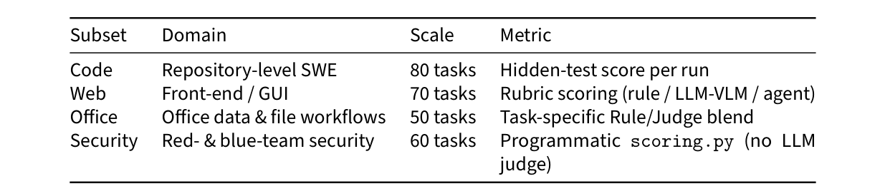
Table 1. Suite at a glance: the four subsets, each scored under a dual harness (CodeBuddy Code and Claude Code). All subsets are the initial public release.
workspace does not already pass and that at least one reference solution reaches full verifier reward; front-end artifacts are scored through rule checks for deterministic constraints, LLM/VLM judges for textual, structured, and visual semantics, and an agent-judge that drives the running artifact to inspect interactive flows and state. For Office, deterministic rule checks verify files, structure, values, state, and execution boundaries, while an LLM Judge evaluates binary semantic rubrics using fixed evidence extracted after the task ends. The two scores are reported separately and combined using each task’s preconfigured weight. 4) We report a cross-model leaderboard spanning multiple model families under two evaluation harnesses (CodeBuddy Code and Claude Code).
工作区不会天然通过验证，且至少有一个参考解能达到验证器满额奖励；前端产物由三路打分：针对确定性约束的规则检查、针对文本、结构与视觉语义的 LLM/VLM 评审，以及驱动运行中产物以检查交互流程与状态的 agent-judge。Office 方面，确定性规则检查核验文件、结构、取值、状态与执行边界，LLM Judge 则依据任务结束后抽取的固定证据评定二元语义量表。两项分数分别报告，再按每任务预配置的权重合成。4) 报告在 CodeBuddy Code 与 Claude Code 两个评测 harness 下、覆盖多个模型家族的跨模型排行榜。
In short, this report provides three things: the suite’s design, the current task-set composition of each subset, and the cross-model leaderboard. Table 1 summarizes the four subsets.
简言之，本报告提供三样内容：套件设计、各子集当前的任务集构成，以及跨模型排行榜。表 1 概括四个子集。
The remainder of the report is organized as follows. Section 6 first positions the suite against existing public and vendor-production agent benchmarks in the code and web domains. Section 2 then describes the suite’s shared design principles, task format, and execution model, followed by sections detailing each of the four subsets, the evaluation harness and scoring methodology, results, and limitations.
报告余下部分安排如下。第 6 章先将本套件与代码、Web 领域已有的公开及厂商生产类 Agent 基准对照定位；第 2 章阐述套件共享的设计原则、任务格式与执行模型；随后各章依次详述四个子集、评测 harness 与打分方法、结果及局限。
2 Task Construction2 任务构造
This section states the suite-level construction protocol of Tencent WorkBuddy Bench. Across all four subsets – Code, Web, Office, and Security – tasks follow the same broad stages: sourcing, rewriting into realistic requests, assembling the agent-visible workspace, isolating evaluation assets until the episode ends, and packaging each task as a self-contained directory. User data is kept out of construction throughout. The scoring instruments and any subset-specific admission checks are not uniform: Code uses hidden tests, Web uses rule, LLM/VLM, and agent-judge rubric items, Office uses a task-specific blend of deterministic rule checks and evidence-grounded LLM Judge rubrics, and Security uses a deterministic scoring.py. Because these instruments differ, scores are not comparable across subsets and the suite reports no suite-wide average; this is a deliberate design decision, not a limitation to be corrected. This section covers construction and packaging; execution and per-track scoring are specified once, in Section 4.
本章给出腾讯 WorkBuddy Bench 的套件级构造协议。在 Code、Web、Office、Security 四个子集中，任务遵循同一套宏观流程：取材、改写为贴近真实的请求、组装 Agent 可见的工作区、在回合结束前隔离评测资产、将每个任务打包为自包含目录。全程不引入用户数据。打分工具与子集特有的准入检查并不统一：Code 用隐藏测试；Web 用规则、LLM/VLM 与 agent-judge 量表条目；Office 将确定性规则检查与以证据为依据的 LLM Judge 量表按任务混合；Security 用确定性的 scoring.py。工具不同，分数跨子集便不可比，套件也不报告全套件平均分——这是有意的设计决策，而非有待修正的局限。本章只讲构造与打包；执行与各赛道打分统一在第 4 章一次性规定。
Task sources. Every task is anchored to a concrete origin of one of two kinds: a real upstream artifact – a historical commit or pull request in an open-source repository (Code), or a real, histori- cal CVE (Security’s whitebox-audit tasks) – or a concrete business scenario (Web, Office, and the synthetic task families of Code and Security). Which scenarios are worth building, and in what proportion, is decided against internal usage taxonomies: each subset’s mix of categories, task
任务来源。每个任务都锚定于两类具体来源之一：真实的上游产物——开源仓库中的历史 commit 或 pull request（Code），或真实的历史 CVE（Security 的白盒审计任务）；或具体的业务场景（Web、Office，以及 Code 与 Security 的合成任务族）。哪些场景值得构造、以何种比例构造，依据内部使用分类体系决定：每个子集的类别、任务
TENCENT WORKBUDDY BENCH Technical Report · 2026
腾讯 WorkBuddy Bench 技术报告 · 2026
modes, roles, and difficulty is matched to the distribution of real requests, never to the requests themselves. No raw user prompt, session, or other user data enters any task; construction is informed only by aggregate distributions. Within the business-scenario branch, Office uses two construction routes: tasks reconstructed from task specifications and target capabilities, and tasks expanded from abstracted office workflows. Both are packaged as self-contained workspaces con- taining only openly shareable inputs and pass the same checks for workspace integrity, evaluation assets, calibration, and release readiness.
模式、角色与难度对齐的是真实请求的分布，绝非请求本身。任何原始用户提示、会话或其他用户数据都不进入任何任务；构造仅由聚合分布引导。在业务场景分支内，Office 有两条构造路线：由任务规格与目标能力重构的任务，以及由抽象办公工作流扩展而来的任务。两者都打包为仅含可公开共享输入的自包含工作区，并通过相同的工作区完整性、评测资产、校准与发布就绪检查。
Rewriting protocol. Tasks are not written as tidy issue titles or textbook exercises. Where a task derives from a real upstream artifact, its original context is reverse engineered and rewritten as a short, colloquial, underspecified natural-language request; where it is authored from a business scenario, the request is written directly in the same voice. Either way the request reads as a plausible ask from a colleague or customer – Code additionally voices every task through one of five requester personas (developer, algorithm engineer, product manager, QA, operations), and Security assigns each task domain a professional role – and the instruction withholds the root cause, the reference diff, and any framing that would hand the agent the solution, so the agent must locate the relevant surface of the workspace itself before it can act. This stands in contrast to benchmarks that supply a detailed, already-diagnosed issue report.
改写协议。任务不以工整的 issue 标题或教科书练习的面目出现。凡源自真实上游产物，先逆向还原其原始语境，再改写为简短、口语化、欠规约的自然语言请求；凡由业务场景直接撰写，则请求以同一口吻写出。无论哪种路径，请求读来都像同事或客户提出的合理请求——Code 让每个任务由五种请求者角色之一（开发者、算法工程师、产品经理、QA、运维）发声，Security 为每个任务领域指派一种职业角色——且指令隐去根因、参考 diff 以及任何会把解法拱手交给 Agent 的线索，Agent 必须先自行定位工作区中的相关表面，方能行动。这与提供详尽、已确诊 issue 报告的基准形成鲜明对照。
Deliberate underspecification. Across all four subsets, requests are written the way a colleague actually asks – an intent and a constraint, not a specification – and are deliberately left under- specified: they routinely omit the target file or module, the exact schema or interface, edge-case handling, and the precise boundary of the change. Resolving these gaps is part of the task itself: the agent must recover the missing context from the workspace – the repository, data fixtures, or existing code and interfaces – and commit to a reasonable implicit assumption rather than being handed one. This is intentional, not an oversight: it tests requirement disambiguation and grounding as much as code synthesis, and is what separates a realistic work request from a tidy issue title. Reward is computed from task-specific checks, rubrics, or evaluation procedures, not by matching one reference implementation or phrasing. These instruments encode the intended contract, so a plausible but contract-violating output can still fail. The agent is judged on meeting that contract, not on recovering one blessed realization of it.
有意欠规约。四个子集中，请求一律按同事实际提问的方式书写——一个意图加一条约束，而非一份规格说明——并有意保持欠规约：通常不指明目标文件或模块、确切的数据模式或接口、边界情况的处理方式以及变更的精确范围。填补这些空白本身就是任务的一部分：Agent 必须从工作区——仓库、数据夹具或既有代码与接口——找回缺失的上下文，自行承诺一个合理的隐式假设，而非等人递到手上。这是有意设计而非疏漏：它与代码合成同样程度地检验需求消歧与上下文落地能力，也正是贴近真实的工作请求与工整 issue 标题的分野。奖励由任务特定的检查、量表或评测程序计算，而非比对某个参考实现或参考措辞；这些工具编码的是预期契约，因此看似合理但违反契约的输出照样会失分。评判 Agent 的标准是是否满足契约，而非是否复原出契约的唯一“标准答案”实现。
Post-episode evaluation isolation. Throughout an episode, the agent sees the task instruction and declared workspace but not the grading assets. Only after the agent has finished acting are task-specific checks, rubrics, or evaluation procedures introduced into the sandbox or invoked by the evaluation pipeline. “Hidden” or “held out” therefore describes solve-time visibility, not secrecy after release: the evaluation assets are public with the rest of the dataset. Their form remains subset-specific – Code hidden tests, Web rubric evaluators, Office Rule–Judge evaluation, and Security’s deterministic scorer – while the shared property is the temporal boundary between acting and grading. Code’s diagnostic gold patch and oracle-gated admission are described in the Code subsection of Section 3.
回合后评测隔离。整个回合期间，Agent 只看到任务指令与声明的工作区，看不到评分资产；只有在其行动结束后，任务特定的检查、量表或评测程序才被引入沙箱或由评测管线调用。因此“隐藏”“保留”描述的是解题时的可见性，而非发布后的保密——评测资产与其余数据集一同公开。其形式因子集而异：Code 的隐藏测试、Web 的量表评审器、Office 的规则–Judge 评测、Security 的确定性打分器；共享的性质则是行动与评分之间的时间边界。Code 的诊断性 gold patch 与 oracle 闸门准入见第 3 章 Code 小节。
Task-directory format. Tasks are packaged using a Harbor [6]-style task-directory convention, with a small delta from the vanilla Harbor layout that separates the agent-visible workspace from post-episode evaluation assets:
任务目录格式。任务按 Harbor [6] 风格的任务目录约定打包，相对原生 Harbor 布局仅有一处小改动：把 Agent 可见的工作区与回合后评测资产分离开来：
TENCENT WORKBUDDY BENCH Technical Report · 2026
腾讯 WorkBuddy Bench 技术报告 · 2026
tasks/<task-name>/tasks/<task-name>/
task.toml instruction.md environment/task.toml instruction.md environment/
Dockerfile workspace/ tests/Dockerfile workspace/ tests/
test.sh grading/ gold.patch (optional; Code diagnostic reference)
test.sh grading/ gold.patch（可选；Code 诊断参考）
instruction.md carries the natural-language request described above. task.toml carries taskmetadata–category, difficulty, tags, resourcelimits, andper-roletimeouts–underaversioned schema. environment/ defines the sandbox: a Dockerfile that copies in workspace/ and nothing else, so that the agent-visible surface is exactly the repository or business artifact under test. tests/ holds post-episode evaluation assets: test.sh is the entry point and grading/ contains the task-specific checks or evaluation configuration. The optional gold.patch is a Code-specific diagnostic reference; its role in Code’s oracle-gated admission is described in Section 3. Because the Dockerfile builds only the visible workspace and everything under tests/ stays outside the image, the post-episode evaluation boundary is a property of the packaging itself, not of runtime configuration.
instruction.md 承载上文所述的自然语言请求。task.toml 依带版本的 schema 记录任务元数据——类别、难度、标签、资源限制与按角色的超时设置。environment/ 定义沙箱：其中的 Dockerfile 只复制 workspace/ 而不复制任何其他内容，令 Agent 可见的表面恰好是受测的仓库或业务产物。tests/ 存放回合后评测资产：test.sh 是入口，grading/ 存放任务特定的检查或评测配置。可选的 gold.patch 是 Code 特有的诊断参考，其在 Code oracle 闸门准入中的作用见第 3 章。Dockerfile 只构建可见工作区，tests/ 下的一切都留在镜像之外，因此回合后评测边界是打包本身的属性，而非运行时配置的属性。
Execution. How a packaged task is executed – the sandboxed container lifecycle, model con- nectivity, harness backends, and each track’s scoring rule – is specified once, in Section 4.
执行。打包后的任务如何执行——沙箱容器生命周期、模型连通性、harness 后端以及各赛道打分规则——统一在第 4 章一次性规定。
Contamination-resistant task construction. Resistance to contamination comes first from con- struction. Because tasks are built from real commits, CVEs, and business scenarios and rewritten into role-played natural-language requests rather than copied from public problem statements, no task’s instruction text is recoverable by web-searching the underlying issue, pull-request, or commit thread: the searchable-prompt path is closed at the point the task is written, independent of when the task is released. Because the dataset is released openly – task directories, grading tests, and reference solutions included – this resistance can no longer lean on secrecy or on withholding the graded answer. Two open-benchmark mechanisms carry the remaining weight: dataset versioning, under which the suite is periodically refreshed and re-versioned so that a re- leased snapshot can be superseded once exposure to it accumulates, and optional canary strings that let a later training crawl of the released set be detected. The residual exposure is stated in the same breath: a model may already have seen the original public commit or pull-request code, or – for the CVE-anchored security tasks – public vulnerability analysis of the underlying flaw; and, exactly as for any openly released benchmark such as SWE-bench, a public task set is subject to post-release training exposure that versioning mitigates but does not eliminate. The claim is therefore narrow and honest: contamination-resistant task construction closes the searchable- prompt path by construction, and open-release versioning manages exposure over time – not that the suite is contamination-free.
抗污染任务构造。对污染的抵御首先来自构造。任务由真实 commit、CVE 与业务场景构建，并被改写为角色扮演式自然语言请求，而非从公开问题陈述复制，因此任何任务的指令文本都无法通过检索底层 issue、pull request 或 commit 讨论串复原——可检索提示词这条路径在任务落笔之时即被关闭，与发布时间无关。数据集既然开放发布——任务目录、评分测试与参考解答都在其中——这种抵御便不能再依赖保密或扣留被评分的答案。余下的分量由两个开放基准机制承担：其一是数据集版本管理，套件周期性刷新并重新版本化，使已发布快照可在暴露累积后被取代；其二是可选的金丝雀字符串，用于检测已发布集是否进入后续训练抓取。残余暴露也一并如实说明：模型可能早已见过原始公开 commit 或 pull request 代码；对锚定 CVE 的安全任务，也可能见过针对该底层缺陷的公开漏洞分析；而且与 SWE-bench 等任何公开基准一样，公开任务集难免发布后的训练暴露——版本管理可缓解，无法根除。因此主张是狭窄而诚实的：抗污染任务构造从构造上关闭可检索提示词路径，开放发布的版本管理在时间维度上管理暴露——而非声称套件无污染。
Version naming. Each subset carries an internal version identifier combining a major index with a date stamp, but the semantics of the major index are subset-specific rather than uniformly
版本命名。每个子集都有一个由主版本号与日期戳组合而成的内部版本标识，但主版本号的语义因子集而异，并非统一
TENCENT WORKBUDDY BENCH Technical Report · 2026
腾讯 WorkBuddy Bench 技术报告 · 2026
sequential, so version numbers are not directly comparable across subsets.
顺序编号，版本号跨子集不可直接比较。
2.1What Is Released2.1 发布内容
The suite is released as a fully open, SWE-bench-style dataset: everything needed to run, grade, and audit a task is public. The construction protocol above, the packaging convention, the task directories, the workspace/environment images, the evaluation harness and its aggregation code, the grading tests, and the reference solutions are all released, so any third party can re-run an individual task and inspect its content directly – the benchmark is fully reproducible and openly auditable, not merely auditable at the level of a published protocol. Table 2 lists what the release contains. The one thing it does not contain is user data, and that is by absence rather than by withholding: no raw user prompt, session, or other user data is used at any point in construction, so there is none to release.
本套件以完全开放、SWE-bench 风格的数据集发布：运行、评分与审计一个任务所需的一切均为公开。上述构造协议、打包约定、任务目录、工作区/环境镜像、评测 harness 及其聚合代码、评分测试与参考解答全部发布，任何第三方都能重跑单个任务并直接检查其内容——基准因此完全可复现、公开可审计，而非仅停留在“协议可审计”的层面。表 2 列出发布内容。唯一不含的是用户数据，且这是“本就无需”而非“扣留不发”：构造全程不使用任何原始用户提示、会话或其他用户数据，自然无物可发。
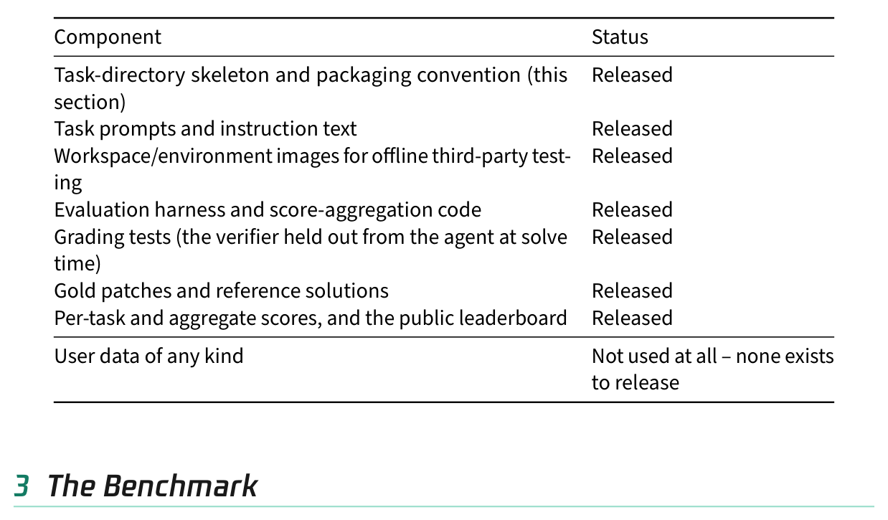
Table 2. Open release: the dataset ships every component needed to run, grade, and audit a task.
Tencent WorkBuddy Bench is organized into four complementary subsets – Code, Web, Office, and Security – each targeting a distinct class of realistic agentic tasks while sharing a common task format and scoring philosophy. This section introduces the Code subset; the following sections cover Web, Office, and Security in turn.
腾讯 WorkBuddy Bench 由四个互补子集组成——Code、Web、Office 与 Security——各自面向一类不同的现实智能体任务，又共享统一的任务格式与打分理念。本节介绍 Code 子集，随后各节依次介绍 Web、Office 与 Security。
3.1Code3.1 Code
The Code subset measures whether an agent can carry out a real, role-played engineering request against a full open-source repository – not a single-file toy problem, and not a bug report handed to it pre-diagnosed. The agent is dropped into a project checked out at a baseline commit, must locate the relevant code across modules, make the change, and keep the project’s hidden tests green. What sets the subset apart is its role and task-type diversity: every task is voiced by one of five requester roles – developer, algorithm engineer (algo), product manager (pm), quality assurance (qa), and operations (ops) – and spans far more than bug-fix work (Table 4, Figure 2(a)).
Code 子集衡量 Agent 能否在完整开源仓库上完成一项真实的、角色扮演式的工程请求——不是单文件玩具问题，也不是递到手边、已完成诊断的缺陷报告。Agent 被放入检出至基线 commit 的项目，须跨模块定位相关代码、做出修改，并保持项目隐藏测试全绿。该子集的独到之处在角色与任务类型的多样性：每个任务由五种请求者角色之一发声——开发者、算法工程师（algo）、产品经理（pm）、质量保障（qa）、运维（ops）——覆盖远超缺陷修复的范畴（表 4，图 2(a)）。
TENCENT WORKBUDDY BENCH Technical Report · 2026
腾讯 WorkBuddy Bench 技术报告 · 2026
Task provenance. Each task expresses its target change as a natural-language, role-played request, so solving it requires reading and reasoning about the repository itself. Of the 80 tasks, 34 are anchored to a real upstream commit against an actual OSS snapshot (Family A); the remaining 46 have no upstream code and divide – with an approximate internal split – between clean-room reimplementations (Family B, 24 tasks, including the 4 tasks that port JavaScript/TypeScript/Rust targets into Python) and fully synthetic workspaces (Family C, 22 tasks), as summarized in Table 3. Published repository counts vary with whether clean-room and ported targets are included, so we do not report an aggregate count.
任务来源。每个任务把目标变更表述为自然语言的角色扮演式请求，解题必须依托对仓库本身的阅读与推理。80 个任务中，34 个锚定于真实上游 commit、针对真实 OSS 快照（Family A）；其余 46 个无上游代码，按内部近似划分归为两类：净室重实现（Family B，24 个任务，含将 JavaScript/TypeScript/Rust 目标移植为 Python 的 4 个任务）与完全合成的工作区（Family C，22 个任务），汇总见表 3。已发布仓库数随是否计入净室与移植目标而变化，故不报告聚合计数。
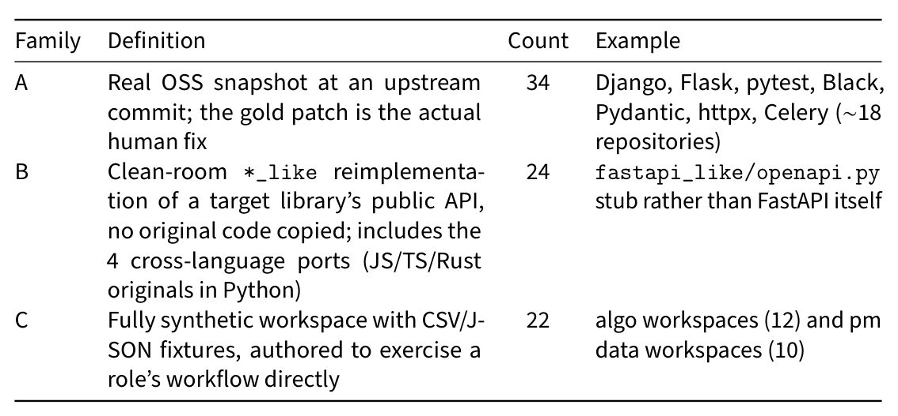
Table 3. Code subset provenance families. Counts sum to the 80-task release: A = 34, B + C = 46.
Scale and release. Code comprises 80 tasks. Each ships as a self-contained Harbor-style task directory – instruction.md, task.toml metadata, an environment/ Docker snapshot of the target repository, and a tests/ directory holding hidden tests plus a diagnostic gold.patch – following the task-directory format of Section 2.
规模与发布。Code 含 80 个任务。每个任务都以自包含的 Harbor 风格任务目录发布——instruction.md、task.toml 元数据、目标仓库的 environment/ Docker 快照，以及存放隐藏测试与诊断性 gold.patch 的 tests/ 目录——遵循第 2 章的任务目录格式。
Oracle-gated admission. Each candidate Code task passes a two-run validation before admis- sion. The task image is first built and its verifier is run against the unchanged baseline workspace. The task’s solution/solve.sh then applies the diagnostic gold patch, after which the verifier is run again. Admission requires baseline reward ≤0.3 and oracle reward = 1.0. This removes tasks whose initial workspace already satisfies too much of the intended contract, as well as tasks whose gold patch cannot achieve full verifier reward. The gold patch is a diagnostic reference for this validation, not the unique correct solution; any patch that satisfies the hidden tests receives the corresponding reward.
Oracle 闸门准入。每个候选 Code 任务在录用前都要通过两轮运行验证：先构建任务镜像，对未修改的基线工作区运行其验证器；再由任务的 solution/solve.sh 应用诊断性 gold patch，重跑验证器。录用要求 baseline reward ≤0.3 且 oracle reward = 1.0。此举剔除了两类任务：初始工作区已满足过多预期契约者，以及 gold patch 无法取得验证器满额奖励者。gold patch 只是这一验证的诊断参考，而非唯一正确解——任何满足隐藏测试的补丁都获得相应奖励。
Domains and difficulty. Tasks carry one of 18 fine-grained categories, merged into six usage domains for readability (Figure 2(a)). Bug fixing accounts for only 10 of the 80 tasks; the other five domains – feature and interface work, code engineering, testing, algorithm engineering, and product/data analytics – carry the remaining 70, a deliberate expansion beyond the “fix a bug, add a feature” framing of earlier benchmarks. Difficulty comes chiefly from cross-module exploration – finding where to edit rather than how – and grows with repository size and structure as tasks
领域与难度。任务归属 18 个细粒度类别之一，为便于阅读合并为六个使用域（图 2(a)）。缺陷修复仅占 80 个任务中的 10 个；其余五域——特性与接口工作、代码工程、测试、算法工程、产品/数据分析——承载其余 70 个，这是对早期基准“修一个缺陷、加一个特性”框架的有意扩展。难度主要来自跨模块探索——难在找到该改哪里，而非怎么改——并随任务攀上
TENCENT WORKBUDDY BENCH Technical Report · 2026
腾讯 WorkBuddy Bench 技术报告 · 2026
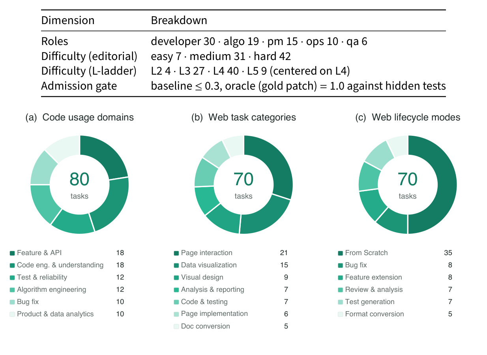
Table 4. Code subset composition (80-task open release).
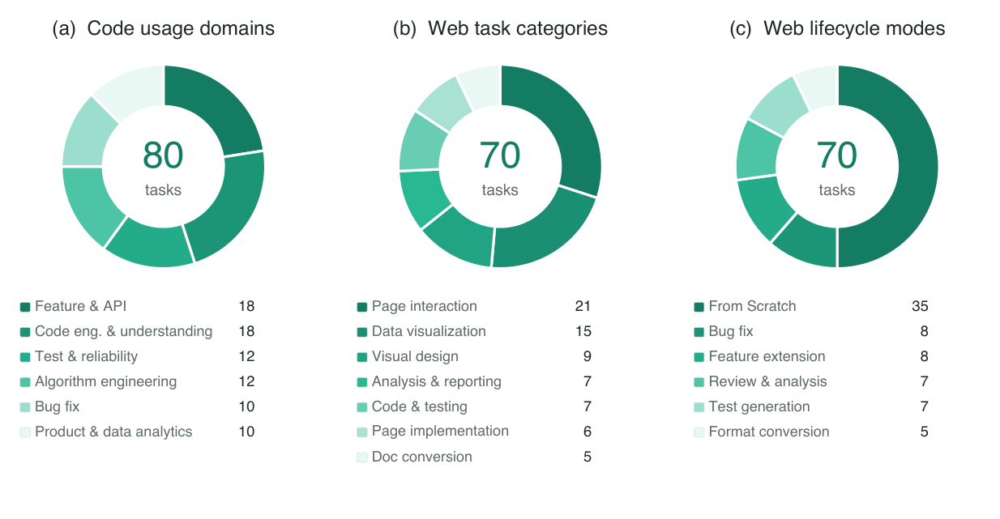
Figure 2. Code and Web task composition. (a) Six Code usage domains merged from 18 fine-grained categories; bug fixing accounts for 10 of 80 tasks. (b) Seven Web task categories. (c) Six Web lifecycle modes; From Scratch accounts for 35 of 70 tasks.
climb the L-ladder, a repository-complexity scale running from L2 (small, few modules) to L5 (large multi-module codebases). Table 4 gives the role and difficulty distributions.
L 阶梯——一条从 L2（小型、模块少）到 L5（大型多模块代码库）的仓库复杂度标尺——而上升。表 4 给出角色与难度分布。
Early evaluation runs during construction showed what failure looks like at repository scale: the dominant zero-score modes were agents looping on test-file edits until timeout, and agents losing their way in a large codebase and editing entirely the wrong files – evidence that difficulty comes from navigation and grounding rather than code synthesis.
构造期间的早期评测运行揭示了仓库尺度上失败的样态：零分的主因是 Agent 反复编辑测试文件直至超时，或在大型代码库中迷失方向、改错了完全不相干的文件——可见难度来自导航与上下文落地，而非代码合成。
A representative role-played request (product manager, product-analytics, signup_funnel, hard):
一个有代表性的角色扮演式请求（产品经理、产品分析、signup_funnel、困难）：
“The checkout-copy experiment finished; I want to know first whether the new version
“结账文案实验已经结束；我想先知道新版本
is better. The data has impression and purchase events – please compute per-group conversion, revenue, and a simple conclusion, and don’t count purchases that happen long afterward.”
是否更好。数据里有曝光和购买事件——请分组计算转化率、收入，并给出一个简单结论；另外，很久之后才发生的购买不要计入。”
The request states an intent and a constraint, not an implementation plan: it names neither the relevant file, the expected schema, nor how the attribution window for excluding late purchases should be drawn, leaving the agent to recover that context from the repository itself.
该请求只陈述意图与约束，而非实现方案：既不指明相关文件与预期的数据模式，也不说明排除滞后购买的归因窗口如何划定，这些上下文都要靠 Agent 从仓库中自行找回。
TENCENT WORKBUDDY BENCH Technical Report · 2026
腾讯 WorkBuddy Bench 技术报告 · 2026
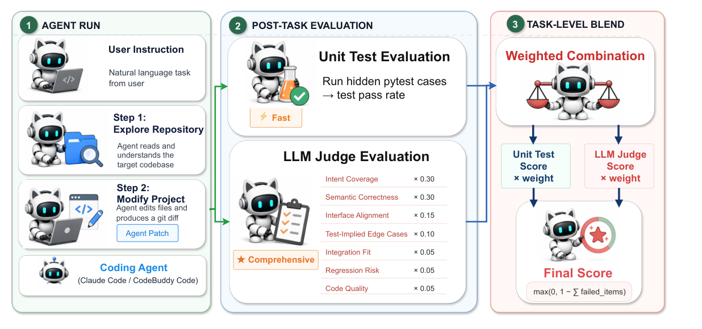
Figure 3. Code task and evaluation workflow. The coding agent reads a natural-language request, explores the repository, and emits a patch (left); the patch is graded by hidden unit tests and, as a diagnostic reference, by a rubric-weighted LLM judge (center). The headline Code metric is the hidden-test score; the LLM-judge reading and its blend are reported as reference values only and never enter the headline metric (right).
Scoring. Each task is scored by a per-task verifier run inside its Docker image after the agent’s patch is applied; the headline Code metric is the run-level score, the per-run average of per-task hidden-test scores. Section 4 gives the three verifier forms, gold-patch handling, and the reference readings in full. Figure 3 summarizes this task and evaluation workflow.
打分。每个任务由任务专属验证器在 Agent 补丁应用后于其 Docker 镜像内运行打分；Code 的头条指标是 run 级分数——各任务隐藏测试得分的单次运行平均。第 4 章完整给出三种验证器形式、gold patch 处理方式与参考读数；图 3 概括这一任务与评测工作流。
3.2 Web3.2 Web
The Web subset tests whether a model can deliver a runnable, checkable front-end artifact – not simply emit plausible-looking HTML in a chat turn. Every task carries an artifact-not-chat contract: the agent must produce a runnable artifact at a declared output path (for example, an HTML entry point); a well-written answer with no artifact at that path fails regardless of content. Across its 70 tasks, coverage spans front-end artifact generation, modification, analysis, and quality assurance in one task space: page implementation, page interaction, data visualization, visual design, analytical reporting, code testing, and document conversion.
Web 子集测试模型能否交付可运行、可检查的前端产物——而非只在对话轮次里输出看似合理的 HTML。每个任务都带有“产物而非对话”的契约：Agent 必须在声明的输出路径（例如某个 HTML 入口）产出可运行产物；写得好但在该路径下没有产物的回答，无论内容如何一律判负。70 个任务的覆盖面横跨同一任务空间内的前端产物生成、修改、分析与质量保障：页面实现、页面交互、数据可视化、视觉设计、分析报告、代码测试与文档转换。
Tasks are organized into seven categories (Figure 2(b)): page interaction (21 tasks) and data visualization (15) dominate, together accounting for 36 of the 70 tasks, while the remainder covers visual design, front-end project analysis, code testing, page implementation, and document conversion – work that traditional front-end generation benchmarks rarely exercise.
任务组织为七个类别（图 2(b)）：页面交互（21 个）与数据可视化（15 个）占主导，合计占 70 个任务中的 36 个；其余覆盖视觉设计、前端项目分析、代码测试、页面实现与文档转换——这些正是传统前端生成基准很少触及的工作。
Orthogonally, each task is authored to exercise one point in the web-development lifecycle (Figure 2(c)). From Scratch alone would only probe generation ability, so half the suite instead requires fixing front-end state, runtime, or visual defects, extending an existing page or application, reviewing Web project evidence, generating regression tests, or converting source material into a front-end-facing deliverable – so that models which can only create, and not maintain, are not rewarded disproportionately. In panel (c), From Scratch holds exactly half the suite (35 of 70 tasks), with the other half split across bug fix (8), feature extension (8), review & analysis (7), test generation (7), and format conversion (5).
与之正交，每个任务都被设计为锻炼 Web 开发生命周期中的一个环节（图 2(c)）。仅有 From Scratch 只能考察生成能力，因此套件有一半转而要求修复前端状态、运行时或视觉缺陷，扩展现有页面或应用，评审 Web 项目证据，生成回归测试，或将源素材转换为面向前端的交付物——以免“只会创建、不会维护”的模型获得不成比例的奖励。面板 (c) 中，From Scratch 恰占一半（70 个中的 35 个），另一半分布于缺陷修复（8）、特性扩展（8）、评审与分析（7）、测试生成（7）与格式转换（5）。
TENCENT WORKBUDDY BENCH Technical Report · 2026
腾讯 WorkBuddy Bench 技术报告 · 2026
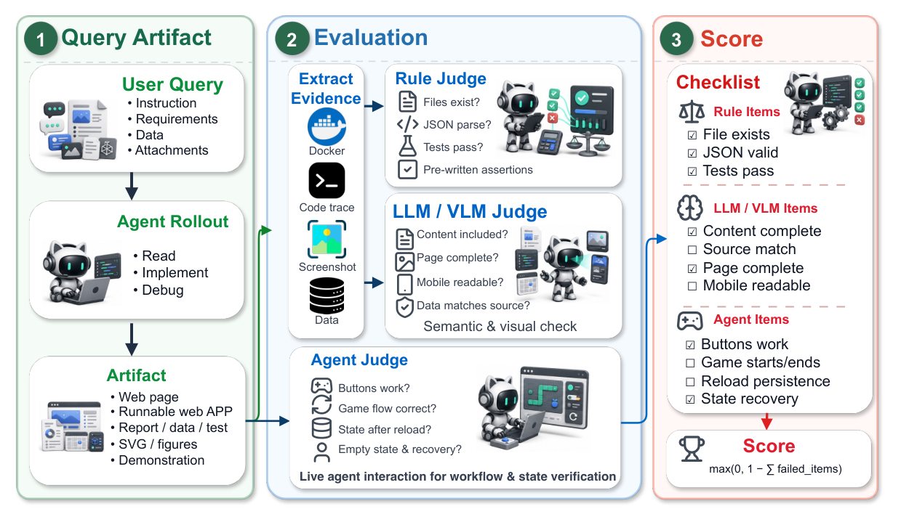
Figure 4. Web task and evaluation workflow, from query and agent rollout to the delivered artifact (left), through rule, LLM/VLM, and agent judges over extracted evidence (center), to rubric-item checklist scoring (right), combining deterministic checks, semantic and visual judgment, and live interaction over the delivered artifact.图 4 概括了这一以产物为中心的工作流：从查询解读、Agent 演练，到证据抽取、互补评审与清单打分。
A third axis tracks interaction and state complexity. Twenty-five tasks are noninteractive front-end project artifacts, while 45 require interaction or state: single-flow state changes (15), persistence, offline, or cross-state behavior (13), multi-step workflows (9), and light interaction (8). This axis keeps the subset from collapsing into static page generation: many tasks require the artifact’s state to change, recover, or stay consistent under user actions.
第三个轴追踪交互与状态复杂度。25 个任务是非交互的前端项目产物；45 个要求交互或状态：单流程状态变更（15）、持久化/离线/跨状态行为（13）、多步工作流（9）以及轻交互（8）。这条轴使子集不致坍缩为静态页面生成——许多任务要求产物状态在用户操作下发生变化、恢复或保持一致。
A representative request from the page-interaction category (mobile store booking):
来自页面交互类别的一个有代表性的请求（移动端门店预约）：
“I want a mobile store-booking page: users pick a service and a time slot, fill in contact
“我要一个移动端门店预约页：用户选择服务与时间段，填写联系
details, and confirm. Full slots must not be selectable, and there should be a review step before submitting.”
方式，然后确认。已满的时段不可选择，且提交前应有复核步骤。”
The ask names an intent and a couple of constraints – slot capacity, a review step before submission – not a full specification, leaving the agent to produce a runnable artifact that a rubric can verify against the requested behavior.
该请求点明一个意图和几条约束——时段容量、提交前复核——而非完整规格；Agent 需自行产出可运行产物，由评分量表对照所请求的行为加以验证。
Scoring uses rubric items judged by rule checks, LLM/VLM judges, and an agent-judge. Rule checks cover deterministic delivery constraints such as files, formats, prechecks, and executable tests; LLM/VLM judges review textual, structured, DOM, screenshot, and visual evidence; and the agent-judge drives the running artifact to inspect workflows, state changes, and persistence. A run must still deliver the declared artifact at the declared output path, and tasks run with no access to the live internet, external accounts, keys, or live data. Section 4 gives the item counts, aggregation rule, and model-judge risk in full.
打分由三类量表条目构成，分别由规则检查、LLM/VLM 评审与 agent-judge 判定。规则检查覆盖文件、格式、预检、可执行测试等确定性交付约束；LLM/VLM 评审查看文本、结构、DOM、截图与视觉证据；agent-judge 驱动运行中的产物，检查工作流、状态变更与持久化。一次运行仍须在声明的输出路径交付声明的产物，且任务运行全程无法访问实时互联网、外部账号、密钥或实时数据。第 4 章完整给出条目数、聚合规则与模型评审风险。
TENCENT WORKBUDDY BENCH Technical Report · 2026
腾讯 WorkBuddy Bench 技术报告 · 2026
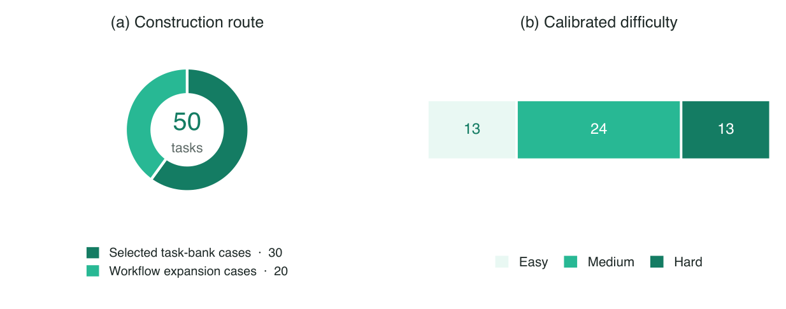
Figure 5. Composition of the 50-task Office release by construction route and calibrated difficulty.
3.3Office3.3 Office
The Office subset tests whether an agent can complete a natural-language work request in a local workspace containing mixed-format files. Inputs include spreadsheets, documents, PDFs, JSON exports, Markdown notes, and file trees; outputs include updated workbooks, reports, structured records, state files, and handoff material. The agent must produce the requested deliverables, keep information consistent across files, update related state, preserve evidence for review, and respect task-specific execution constraints. Evaluation examines the final workspace, which catches failures that a text-answer score misses, such as writing a plausible summary without updating the workbook it describes or creating a file while leaving dependent state inconsistent.
Office 子集测试 Agent 能否在含混合格式文件的本地工作区内完成自然语言工作请求。输入包括电子表格、文档、PDF、JSON 导出、Markdown 笔记与文件树；输出包括更新后的工作簿、报告、结构化记录、状态文件与交接材料。Agent 必须产出所请求的交付物、保持跨文件信息一致、更新相关状态、保留供审查的证据，并遵守任务特定的执行约束。评测检查最终工作区，从而抓住文本答案式评分漏掉的失败：例如写了一份看似合理的摘要，却没有更新它所描述的工作簿；或创建了文件，却让依赖状态处于不一致之中。
Scale and coverage. Figures 5 and 6 summarize the Office release. The first separates con- struction route and calibrated difficulty; the second places task type, scenario, output family, and evaluation mechanism in one aligned row. The open release contains 50 tasks built through two routes: 30 tasks reconstructed from task specifications and target capabilities, and 20 tasks expanded from abstracted office workflows. Both routes produce the same release package and follow the same verification protocol. At the broad task-family level used in this coverage view, the release contains 24 data, spreadsheet, or structured-processing tasks; 17 document, report, or presentation tasks; and 9 workspace-automation or stateful-workflow tasks. The figure also groups tasks into six office scenarios: data and finance analysis (16 tasks), documents and presen- tation material (11), reconciliation and back-office operations (8), engineering and tool workflows (5), stateful workflows (5), and compliance and evidence organization (5). These groups describe benchmark coverage rather than estimate production request traffic.
规模与覆盖。图 5 与图 6 概括 Office 发布：前者分离构造路线与校准难度；后者把任务类型、场景、输出族与评测机制排成一行对齐展示。开放发布含 50 个任务，经两条路线构建：30 个由任务规格与目标能力重构，20 个由抽象办公工作流扩展；两条路线产出相同的发布包，遵循相同的验证协议。按本覆盖视图采用的粗粒度任务族计，发布包含 24 个数据/电子表格/结构化处理任务、17 个文档/报告/演示任务、9 个工作区自动化或有状态工作流任务。图中还将任务归入六个办公场景：数据与财务分析（16 个）、文档与演示材料（11 个）、对账与后台运营（8 个）、工程与工具工作流（5 个）、有状态工作流（5 个）、合规与证据整理（5 个）。这些分组描述的是基准覆盖面，而非对生产请求流量的估计。
Difficulty is reported in three calibrated tiers: 13 easy, 24 medium, and 13 hard tasks. Output families use multi-label counts: 24 tasks produce spreadsheets, 20 Markdown, 15 JSON, 6 plain text, and 5 workspace or state outputs, with smaller coverage of presentation, CSV, manifest, filesystem, and audit-log deliverables. The release is text-first: its core tasks and evaluation do not require OCR, a vision-language model, or pixel-level layout judgment.
难度按三个校准层级报告：简单 13 个、中等 24 个、困难 13 个。输出族采用多标签计数：24 个任务产出电子表格、20 个 Markdown、15 个 JSON、6 个纯文本、5 个工作区或状态输出，另少量覆盖演示文稿、CSV、清单、文件系统与审计日志交付物。发布以文本为主：核心任务与评测不依赖 OCR、视觉语言模型或像素级版面判断。
Construction and difficulty. Each task starts from a target capability or workflow. We then build the agent-visible workspace and separate evaluation assets, test the evaluator on saved submissions, calibrate difficulty, and run release checks. During execution, the agent sees only the
构造与难度。每个任务从一项目标能力或工作流出发。随后构建 Agent 可见的工作区并分离评测资产，在保存的提交上测试评测器、校准难度并运行发布检查。执行期间，Agent 只看到
TENCENT WORKBUDDY BENCH Technical Report · 2026
腾讯 WorkBuddy Bench 技术报告 · 2026
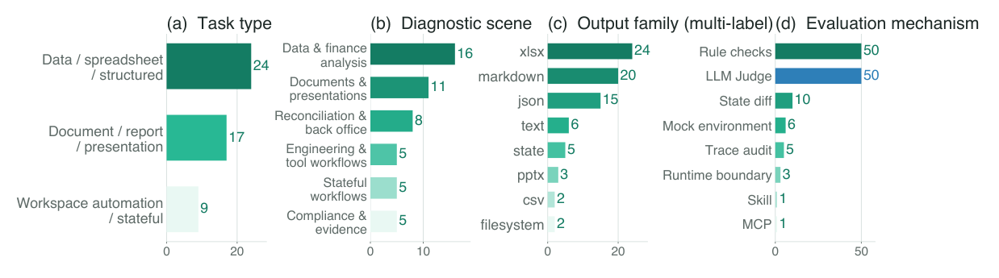
Figure 6. Office coverage across task type, diagnostic scenario, output family, and evaluation mechanism, arranged as a single row of four bar charts. Output families and mechanisms use multi-label counts; scenario groups describe benchmark coverage and are not estimates of production request traffic.
request and declared inputs; reference answers, expected state, rule checks, semantic rubrics, and evaluation support files are used only after the agent finishes. Before release, saved-submission replays check that the evaluator covers the objective requirements, provides enough evidence for the semantic rubrics, and does not penalize valid high-quality outputs.
请求与声明的输入；参考答案、期望状态、规则检查、语义量表与评测支持文件只在 Agent 完成后启用。发布前，以保存提交的回放来检查评测器是否覆盖客观要求、是否为语义量表提供足够证据，以及是否会误罚有效的高质量输出。
Difficulty comes from the solution path rather than file count alone. Common requirements include cross-file key matching and alias resolution, temporal or state dependencies, rule priority, conflicting or missing evidence, and consistency across multiple deliverables. A hard task may require an agent to reconcile several sources, preserve unresolved conflicts, update both a pri- mary deliverable and a state record, and avoid prohibited side effects. These requirements help distinguish model capabilities without depending on live services or undisclosed accounts.
难度来自解题路径本身，而非文件数量。常见要求包括跨文件键匹配与别名解析、时间或状态依赖、规则优先级、证据冲突或缺失，以及多个交付物之间的一致性。一道难题可能要求 Agent 对多个来源对账、保留未决的冲突、同时更新主交付物与状态记录，并避免被禁止的副作用。这些要求能够区分模型能力，而无需依赖在线服务或未公开账号。
A representative task, hospital_bed_utilization, provides a ward configuration table, an admission log, and a bed-status policy table. The agent must compute monthly utilization by ward and bed type and write a two-sheet workbook containing utilization detail and ward-level summaries. A plausible-looking percentage is insufficient: the submission must resolve keys across sources, normalize dates, apply the correct reporting period and policy denominator, preserve the requested schema, and keep detail and summary sheets mutually consistent. The task therefore tests the reliability of a complete file workflow rather than a single calculation.
有代表性的任务 hospital_bed_utilization 提供病区配置表、入院日志与床位状态策略表各一份。Agent 须按病区与床位类型计算月度利用率，并写出含利用率明细与病区级汇总的双工作表工作簿。看似合理的百分比并不足够：提交必须跨来源解析键、规范化日期、套用正确的报告期与策略分母、保持所请求的模式，并使明细表与汇总表相互一致。该任务检验的是完整文件工作流的可靠性，而非单次计算。
Scoring. Every Office task uses two scoring components: deterministic rule checks and an evidence-grounded LLM Judge. Rule checks are binary tests of objective requirements that can be evaluated exactly, such as required files, schemas, values, source relations, state transitions, side effects, and execution constraints. Each semantic rubric defines one binary quality condition that the Judge evaluates from fixed evidence generated after the task ends, including submitted deliverables and task-specific state or source summaries. The Judge does not inspect a live workspace or alter recorded rule-check outcomes. All 50 tasks use both components. For selected tasks, state differences (10 tasks), controlled environments (6), execution traces (5), or runtime boundaries (3) provide evidence for rule checks or semantic rubrics; they are not additional scoring channels. Section 4 defines how each task combines Rule and Judge scores, how trials are aggregated, and how unavailable Judge results are handled. Figure 7 summarizes the evaluation flow.
打分。每个 Office 任务都由两个打分组件构成：确定性规则检查与以证据为依据的 LLM Judge。规则检查是对可精确评估的客观要求的二元测试，涵盖必需文件、模式、取值、来源关系、状态转换、副作用与执行约束。每条语义量表定义一个二元质量条件，由 Judge 依据任务结束后生成的固定证据评定，证据包括提交的交付物与任务特定的状态或来源摘要。Judge 不检查实时工作区，也不改动已记录的规则检查结果。全部 50 个任务同时使用两个组件。对选定的任务，状态差异（10 个）、受控环境（6 个）、执行轨迹（5 个）或运行时边界（3 个）为规则检查或语义量表提供证据，但不构成额外的打分通道。第 4 章定义每任务如何合成 Rule 与 Judge 分数、试验如何聚合、Judge 结果不可用时如何处理；图 7 概括评测流程。
TENCENT WORKBUDDY BENCH Technical Report · 2026
腾讯 WorkBuddy Bench 技术报告 · 2026
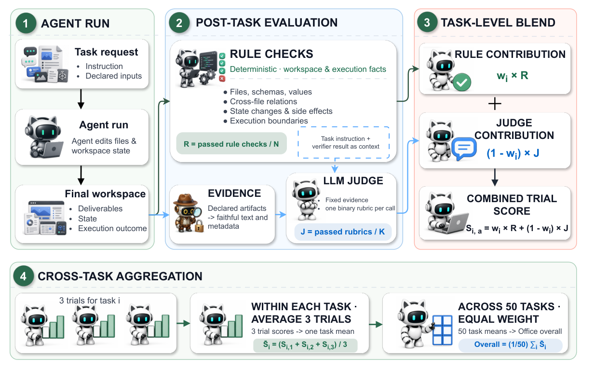
Figure 7. Office task, evaluation, and scoring flow. The agent acts on the workspace and leaves a final state (left); deterministic rule checks evaluate the verifiable workspace state while the LLM Judge evaluates only fixed post-task evidence (center); each task combines the two scores with its own weight, trials are averaged within each task, and task scores are macro-averaged with equal weight (right).
3.4Security3.4 Security
The Security subset covers the security-team spectrum – red-team discovery and safe exploitation, malware analysis, security operations, and agent-security assessment – asking a sharper question than the bug-fix tasks in Code: can an agent locate a real vulnerability and safely reproduce it in a sandboxed environment the way a security researcher does, analyze a malware artifact or triage an alert stream the way a malware analyst or SOC operator does, and probe a tool-using agent the way an AI red-teamer does. Given a task, the agent must earn each step in turn, with no defect location or expected behavior handed to it up front, and every task runs inside a sandboxed evaluation environment. What distinguishes the subset from the rest of the suite is that it carries no LLM judge anywhere: every task ships a deterministic scoring program that turns agent output directly into a numeric reward, backed by a five-layer anti-cheat infrastructure that closes off hardcoding and enumeration.
Security 子集覆盖安全团队的完整谱系——红队发现与安全利用、恶意软件分析、安全运营以及 Agent 安全评估——并向 Code 的缺陷修复任务提出更尖锐的问题：Agent 能否像安全研究员那样定位真实漏洞并在沙箱中安全复现，像恶意软件分析师或 SOC 操作员那样分析恶意软件样本或分诊告警流，像 AI 红队员那样探测使用工具的 Agent？面对任务，Agent 必须逐步赢取每一步：缺陷位置与预期行为不会预先奉上，且每个任务都在沙箱化评测环境中运行。该子集区别于套件其余部分之处，在于全程不使用 LLM 评审：每个任务都附带确定性打分程序，将 Agent 输出直接转换为数值奖励，并由五层反作弊基础设施封死硬编码与枚举。
The Security subset comprises 60 tasks, spanning six fine-grained domains rolled up into four blocks across both red-team and blue-team disciplines (Table 5, Figure 8). Grouped by discipline the suite is red-team-heavy – 38 tasks against 22 blue-team tasks – but still exercises the full defend/detect loop, and difficulty skews hard by design, reflecting the balance of real security work, where difficult cases outnumber easy ones.
Security 子集共 60 个任务，横跨六个细粒度领域，归并为覆盖红蓝两队的四个板块（表 5，图 8）。按学科分组，套件偏重红队——38 个任务对蓝队 22 个——但仍锻炼完整的防御/检测回路；难度有意偏向困难，以反映真实安全工作难例多于易例的分布常态。
Every task’s deterministic scorer executes inside an isolated Docker container and writes a numeric reward directly, so the same output re-scored twice returns the same number (Figure 8, right). Section 4 gives the per-scorer definitions – PoC and flag verification, IOC matching, YARA match rate under a zero-false-positive constraint, and macro-F1/Kendall-tau report scoring.
每个任务的确定性打分器都在隔离的 Docker 容器内执行并直接写出数值奖励，同一输出评分两次得到同一数字（图 8 右）。第 4 章给出各打分器的定义：PoC 与 flag 验证、IOC 匹配、零误报约束下的 YARA 匹配率，以及 macro-F1/Kendall-tau 报告打分。
TENCENT WORKBUDDY BENCH Technical Report · 2026
腾讯 WorkBuddy Bench 技术报告 · 2026
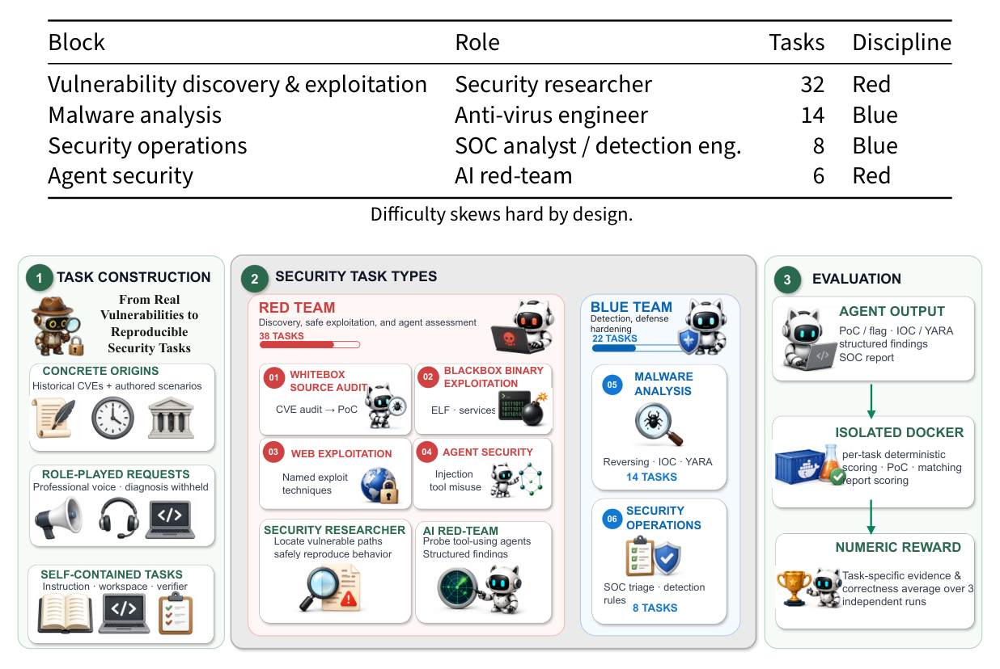
Table 5. The Security subset’s composition, shown at four-block granularity (60 tasks). The vulnerability discovery & exploitation block subdivides into whitebox source audit, blackbox binary exploitation, and web exploitation, giving the six fine-grained domains referenced in the text.
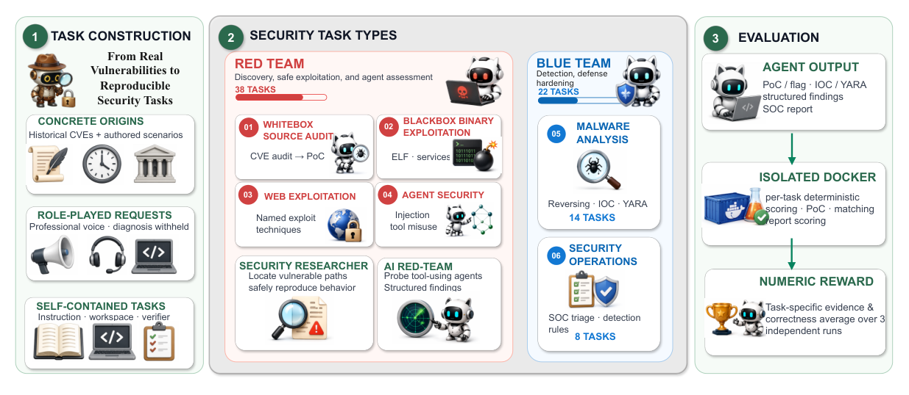
Figure 8. WorkBuddy Bench Security overview. Tasks are built from real, historical vulnerabilities and authored scenarios into reproducible, self-contained cases (left); they span six red- and blue-team task types – whitebox source audit, blackbox binary exploitation, web exploitation, agent security, malware analysis, and security operations – across 38 red-team and 22 blue-team tasks (center); and each is scored by a per-task deterministic program inside an isolated Docker container that emits a numeric reward (right).
The discovery & exploitation block spans whitebox source-audit, blackbox binary-exploitation, andweb-exploitationtasks. Thewhiteboxauditsreproducereal, historicalCVEsinwidelydeployed upstream projects – binutils, curl, nginx, vim, jq, and fluent-bit – under a two-step find-vuln → poc-verify structure in which the second step is gated on clearing the first. In a representative task of this kind, e.g. one targeting binutils, step one gives the agent only the source tree and asks it to readtheparser, tracethedataflow, andlocatethevulnerablecodepath, scoredagainstathreshold before the environment unlocks step two; only then can the agent submit a proof-of-concept input, which passes only if it reproducibly triggers an ASAN crash inside the sandboxed container – a pacing meant to mirror a real audit-then-exploit engagement rather than hand over the defect’s location up front. The web-exploitation cases are built around specific, named techniques (e.g., House of Apple2 and ECDSA nonce reuse) rather than generic vulnerability classes. The six agent- security tasks probe attack surfaces specific to tool-using AI agents – agent-to-agent prompt injection, ReAct chain hijacking, multimodal prompt-chain injection, tool-schema confusion, data exfiltration via a summarization tool, and delayed-trigger attacks – and each requires the agent to return a structured findings report with a CVSS severity rating, mirroring the deliverable a security
发现与利用板块横跨白盒源码审计、黑盒二进制利用与 Web 利用任务。白盒审计在广泛部署的上游项目——binutils、curl、nginx、vim、jq 与 fluent-bit——中复现真实的历史 CVE，采用“找漏洞 → 验证 PoC”的两步结构，第二步以通过第一步为闸门。以一个针对 binutils 的代表性任务为例：第一步只给 Agent 源码树，要求阅读解析器、追踪数据流、定位易受攻击的代码路径，按阈值评分后方解锁第二步环境；此后 Agent 才能提交概念验证输入，且仅当它在沙箱容器内可复现地触发 ASAN 崩溃时方为通过——这一节奏意在模拟真实的“先审计、后利用”行动，而非预先交出缺陷位置。Web 利用案例围绕具体、具名的技术构建（如 House of Apple2 与 ECDSA nonce 重用），而非泛泛的漏洞类别。六个 Agent 安全任务探测使用工具的 AI Agent 特有的攻击面——Agent 间提示注入、ReAct 链劫持、多模态提示链注入、工具模式混淆、经摘要工具的数据外泄与延迟触发攻击——且每个任务都要求 Agent 返回带 CVSS 严重度评级的结构化发现报告，与安全
TENCENT WORKBUDDY BENCH Technical Report · 2026
腾讯 WorkBuddy Bench 技术报告 · 2026
team would expect from a pre-launch agent security review.
团队对上线前 Agent 安全评审所期望的交付物一致。
Anti-cheat. To keep scores meaningful under fully automated, non-judge verification, every task sits behind a five-layer anti-cheat infrastructure that closes off hardcoding and enumeration along the input, code, and output axes:
反作弊。为使分数在全自动、无评审的验证下依然可信，每个任务都设有五层反作弊基础设施，沿输入、代码与输出三条轴封死硬编码与枚举：
• Banned-literal scanning against hardcoded answers.
• 禁用字面量扫描，防硬编码答案。
• Renamed-input tests that check whether an extractor parses structure rather than keying off a filename.
• 改名输入测试，检验抽取器解析的是结构而非文件名。
• Overlay/tamper tests against trailing-data manipulation.
• 覆盖/篡改测试，防尾部数据操纵。
• Encoding-dependence tests that require detection rules to anchor on bytes rather than plaintext.
• 编码依赖测试，要求检测规则锚定字节而非明文。
• Low-weight decoy fields that suppress reward from blind enumeration.
• 低权重诱饵字段，抑制盲目枚举所得的奖励。
Like the other subsets, Security is scored under both the CodeBuddy Code and Claude Code harnesses in think mode, averaged over three runs; results appear in Section 5.
与其他子集一样，Security 在 CodeBuddy Code 与 Claude Code 两个 harness 的 think 模式下打分，三次运行取平均；结果见第 5 章。
TENCENT WORKBUDDY BENCH Technical Report · 2026
腾讯 WorkBuddy Bench 技术报告 · 2026
4Evaluation Harness and Scoring4 评测框架与打分
A benchmark’s numbers are only as trustworthy as the machinery that produces them. Tencent WorkBuddy Bench treats that machinery as a first-class contribution rather than an implementa- tion detail: every task, regardless of track, ships as a self-contained task directory and is executed inside a sandboxed container under one shared harness, and the benchmark is released fully open – task directories, environment images, evaluation code, grading tests, and reference/gold solutions are all public. An external party needs no special access to the benchmark’s internal infrastructure and no bespoke evaluation path per subset: a score can be reproduced, and any individual task re-run and audited directly, from the public release alone. This section describes that harness, how agents connect to models under evaluation, and the scoring rule applied per track; the per-subset sections above defer their scoring detail here.
基准数字的可信度取决于产生它的机制。腾讯 WorkBuddy Bench 将这套机制视为一等贡献而非实现细节：每个任务不分赛道，都以自包含任务目录的形式发布，在共享 harness 下于沙箱容器内执行；基准完全开放——任务目录、环境镜像、评测代码、评分测试与参考/gold 解答全部公开。外部方无需基准内部基础设施的特别访问权限，也无需为每个子集定制评测路径：仅凭公开发布即可复现分数，重跑并直接审计任何单个任务。本节描述该 harness、Agent 如何连接被评模型，以及各赛道适用的打分规则；上文各子集章节的打分细节统一收拢于此。
Sandboxed execution and model connectivity. Each trial runs a task’s environment inside an isolated container; the agent sees only the task’s declared workspace, and task-specific evaluation assets are introduced into the sandbox or invoked by the evaluation pipeline only after the agent has finished acting, so grading never leaks into the agent’s context. Model and sandbox concerns are kept deliberately separate: the harness can reach a model backend either directly or through a local proxy that performs protocol translation, model-name rewriting, and request logging, and it can execute the sandbox either on a local machine or on a remote, isolated sandbox backend. When the sandbox runs remotely, no benchmark-side proxy is ever placed inside it – any protocol handling that would otherwise be the proxy’s job is left to the model service itself – and the one combination of sandbox backend and connection mode that cannot satisfy this separation is disabled outright rather than silently falling back to another path. One access asymmetry is disclosed for completeness: the HY (Hunyuan) endpoint used in this evaluation is served first-party by its provider, whereas all other models are accessed through third-party serving endpoints; third-party parameter configuration and request handling may affect metrics.
沙箱执行与模型连通性。每次试验在一个隔离容器内运行任务环境；Agent 只看到任务声明的工作区，任务特定评测资产仅在 Agent 完成行动后才被引入沙箱或由评测管线调用，评分因此不会泄漏进 Agent 的上下文。模型与沙箱两个关注点被刻意分离：harness 既可直连模型后端，也可经由执行协议翻译、模型名改写与请求日志的本地代理；沙箱既可在本机执行，也可在远程隔离的沙箱后端执行。沙箱远程运行时，基准侧代理绝不置于沙箱之内——本应由代理承担的协议处理交由模型服务自身完成——而沙箱后端与连接方式中无法满足这一分离的唯一组合被直接禁用，而非静默回退到其他路径。为完整起见披露一处访问不对称：本评测使用的 HY（Hunyuan）端点由其提供方第一方服务，其余模型均经第三方服务端点访问；第三方的参数配置与请求处理可能影响指标。
Harness backends. The default execution harness is CodeBuddy Code; Claude Code, which speaks the Anthropic protocol directly, is supported as an alternative wherever a model’s own protocol makes that route available. All four tracks are run and reported under both harnesses side by side (dual-harness reporting), since relative rankings can shift between the two – a model that leads under one harness need not lead under the other (Section 5). Reasoning mode (think vs. nothink) is one further configuration axis the harness records per model, alongside the sampling hyperparameters described below; the leaderboard in Section 5 reports the think-mode config- uration throughout. Across both harnesses the protocol fixes reasoning effort to high, unifies the context window at 200k tokens with a common auto-compaction threshold, and disables the WebSearch and AskUserQuestion tools; each model otherwise runs with its provider-default inference hyperparameters, as recorded below. Reported results are tied to the specific builds of the two harnesses used in this evaluation, and metrics may shift as harness versions evolve.
Harness 后端。默认执行 harness 是 CodeBuddy Code；Claude Code 直接使用 Anthropic 协议，凡模型自身协议允许，即可作为替代方案受支持。四个赛道都在两个 harness 下并行运行并报告（双 harness 报告）：相对排名会在两者之间变动——一个 harness 下领先的模型未必在另一个下领先（第 5 章）。推理模式（think 与 nothink）是 harness 为每个模型记录的又一配置轴，与下述采样超参数并列；第 5 章排行榜全程报告 think 模式配置。在两个 harness 上，协议均将推理力度固定为 high，将上下文窗口统一为 200k tokens 并共用同一自动压缩阈值，且禁用 WebSearch 与 AskUserQuestion 工具；其余方面各模型按提供方默认推理超参数运行，如下文记录。所报结果与本次评测所用两个 harness 的具体构建绑定，指标可能随 harness 版本演进而变动。
Scoring formalism. Every task 𝑡in a track’s task set T yields a verifier reward 𝑟𝑡∈[0, 1], and a model’s track score is the unweighted mean
打分形式化。一个赛道任务集 T 中的每个任务 𝑡都产生一个验证器奖励 𝑟𝑡∈[0, 1]，模型的赛道分数为无加权均值
𝑆= 1 |T |𝑆= 1 |T |
𝑟𝑡, (1)𝑟𝑡, (1)
TENCENT WORKBUDDY BENCH Technical Report · 2026
腾讯 WorkBuddy Bench 技术报告 · 2026
averaged over independent runs where a track scores more than one. The per-task reward differs by track. For Code, 𝑟𝑡is the hidden-test pass rate of the agent’s patch. For Web, the reward is computed from a task-specific set of scored rubric items: each item returns pass/fail; let 𝐹𝑡be the set of failed non-fatal items, each with penalty 𝑝𝑡,𝑖; and any fatal failure sets the task reward to zero:
并对计算多于一次的赛道做独立运行平均。任务级奖励因赛道而异：对 Code，𝑟𝑡是 Agent 补丁的隐藏测试通过率；对 Web，奖励由任务特定的带分重量表条目集计算——每个条目返回通过/不通过，设 𝐹𝑡为失败的非致命条目集合，每条带罚分 𝑝𝑡,𝑖，任何致命失败都将任务奖励置零：
0, if any fatal item fails, max(0, 1 −Í0, 若任一致命条目失败, max(0, 1 −Í
𝑖∈𝐹𝑡𝑝𝑡,𝑖), otherwise, (2)𝑖∈𝐹𝑡𝑝𝑡,𝑖), 否则, (2)
For Office, the task reward is a task-specific blend of a deterministic Rule score and an evidence- grounded Judge score, defined below; and for Security, the per-task deterministic scorer combines three programmatic terms, 𝑟𝑡= 𝑤1 artifact + 𝑤2 correctness + 𝑤3 robustness (Figure 8), averaged over three runs.
对 Office，任务奖励是确定性 Rule 分数与以证据为依据的 Judge 分数的任务特定混合，定义见下；对 Security，任务级确定性打分器将三个程序化项合成：𝑟𝑡= 𝑤1 artifact + 𝑤2 correctness + 𝑤3 robustness（图 8），三次运行取平均。
Per-track scoring. Every task is packaged and executed the same way, but the reward computed from it is track-specific:
各赛道打分。每个任务的打包与执行方式相同，但计算出的奖励因赛道而异：
• Code – the run-level score computed by the Harbor harness [6]: the per-run average of per-task hidden-test scores, which is the headline Code metric throughout this report. The verifier takes one of three forms – a pytest-injected suite (22 of 80 tasks), functional boolean assertions needing no pytest or network access (54 of 80), or a JSON-report scorer for repository-understanding tasks (4 of 80); the gold patch is diagnostic only, and any satisfying patch scores full marks. A task-level aggregate unit-test pass rate and an LLM-judge score are recorded as reference values only.
• Code——由 Harbor harness [6] 计算的 run 级分数：各任务隐藏测试得分的单次运行平均，即本报告全程的 Code 头条指标。验证器取三种形式之一：注入 pytest 的测试套件（80 个中 22 个）、无需 pytest 或网络的函数式布尔断言（80 个中 54 个）、面向仓库理解任务的 JSON 报告打分器（80 个中 4 个）；gold patch 仅作诊断，任何满足要求的补丁都得满分。任务级聚合的单元测试通过率与一个 LLM 评审分数仅作为参考值记录。
• Web – rubric scoring over 786 scored items. Rule checks cover 62 deterministic delivery and precheck items; LLM/VLM judges cover 676 items over text, code, structured content, DOM summaries, screenshots, and visual evidence; and the agent-judge covers 48 items that require operating the running artifact, such as workflow completion, state changes, persis- tence, and cross-state consistency. Failed items subtract configured penalties (0.1/0.2/0.3), while fatal failures set the task reward to zero. Every task must still deliver a runnable artifact at the declared output path, with no live-internet, external-account, or key access.
• Web——786 个带分条目上的量表打分。规则检查覆盖 62 个确定性交付与预检条目；LLM/VLM 评审覆盖 676 个条目，涉及文本、代码、结构化内容、DOM 摘要、截图与视觉证据；agent-judge 覆盖 48 个需操作运行中产物的条目，如工作流完成、状态变更、持久化与跨状态一致性。失败条目扣减预配置罚分（0.1/0.2/0.3），致命失败将任务奖励置零。每个任务仍须在声明的输出路径交付可运行产物，且不得访问实时互联网、外部账号或密钥。
• Office – two separately retained scoring channels, each composed of binary checks. De- terministic rule checks verify objective facts in files, structure, values, cross-file relations, state changes, side effects, and execution boundaries. Each semantic rubric specifies one binary, evidence-based quality condition evaluated by an LLM Judge after the task ends. The Judge receives the public task instruction, the complete set of rule-check results, and only the fixed evidence named by the rubric being evaluated; it does not inspect the live workspace or alter recorded rule-check outcomes. Each task preconfigures how the two channel scores are combined.
• Office——两条分别保留的打分通道，各由二元检查组成。确定性规则检查核验文件、结构、取值、跨文件关系、状态变更、副作用与执行边界中的客观事实；每条语义量表规定一个基于证据的二元质量条件，由 LLM Judge 在任务结束后评定。Judge 接收公开的任务指令、完整的规则检查结果集，以及仅被评量表所指名的固定证据；不检查实时工作区，也不改变已记录的规则检查结果。每任务预配置两条通道分数的合成方式。
• Security – hidden-test verification, no LLM judge: every task ships a scoring.py, run in an isolated container, writing a numeric reward directly – exploitation tasks verify a PoC or captured flag, malware-analysis tasks compare IOCs to ground truth, YARA-rule tasks check match rate under a zero-false-positive constraint, and SOC-report tasks score via macro-F1/Kendall-tau against a reference report. Each score averages three independent runs. A five-layer anti-cheat infrastructure (banned-literal scanning, renamed-input tests, overlay/tamper tests, encoding-dependence tests, and low-weight decoy fields) guards against hardcoding across the input, code, and output axes.
• Security——隐藏测试验证，无 LLM 评审：每个任务附带一个 scoring.py，在隔离容器中运行，直接写出数值奖励——利用类任务验证 PoC 或夺取的 flag；恶意软件分析任务将 IOC 与真值比对；YARA 规则任务在零误报约束下检查匹配率；SOC 报告任务对照参考报告按 macro-F1/Kendall-tau 打分。每个分数取三次独立运行的平均。五层反作弊基础设施（禁用字面量扫描、改名输入测试、覆盖/篡改测试、编码依赖测试与低权重诱饵字段）沿输入、代码与输出三条轴防范硬编码。
TENCENT WORKBUDDY BENCH Technical Report · 2026
腾讯 WorkBuddy Bench 技术报告 · 2026
Office Rule–Judge composition. For model 𝑚on trial 𝑎of Office task𝑖, let 𝑃𝑚,𝑖,𝑎be the number of the task’s 𝑁𝑖deterministic rule checks that pass. The Rule score is
Office 的 Rule–Judge 合成。对 Office 任务𝑖上模型 𝑚 的第 𝑎次试验，设 𝑃𝑚,𝑖,𝑎为该任务 𝑁𝑖条确定性规则检查中通过的数量，Rule 分数为
. (3). (3)
If task 𝑖has 𝐾𝑖semantic rubrics and rubric 𝑘returns 𝑏𝑚,𝑖,𝑎,𝑘∈{0, 1}, the Judge score is
若任务 𝑖有 𝐾𝑖条语义量表且量表 𝑘返回 𝑏𝑚,𝑖,𝑎,𝑘∈{0, 1}，则 Judge 分数为
𝐽𝑚,𝑖,𝑎= 1𝐽𝑚,𝑖,𝑎= 1
𝑏𝑚,𝑖,𝑎,𝑘. (4)𝑏𝑚,𝑖,𝑎,𝑘. (4)
The trial score uses the task’s preconfigured rule weight 𝑤𝑖:
试验分数按任务预配置的规则权重 𝑤𝑖合成：
𝑆𝑚,𝑖,𝑎= 𝑤𝑖𝑅𝑚,𝑖,𝑎+ (1 −𝑤𝑖)𝐽𝑚,𝑖,𝑎. (5)𝑆𝑚,𝑖,𝑎= 𝑤𝑖𝑅𝑚,𝑖,𝑎+ (1 −𝑤𝑖)𝐽𝑚,𝑖,𝑎. (5)
Each task fixes 𝑤𝑖between 0.70 and 0.95; Office does not use a single global Rule weight. Let 𝐴𝑖 be the number of available trials for task 𝑖. These trials are averaged first, ¯𝑆𝑚,𝑖= 𝐴−1
每任务将 𝑤𝑖固定在 0.70 与 0.95 之间；Office 不使用单一全局 Rule 权重。设 𝐴𝑖为任务 𝑖的可用试验数，先对这些试验取平均：¯𝑆𝑚,𝑖= 𝐴−1
𝑎𝑆𝑚,𝑖,𝑎. If 𝑇tasks have at least one available trial, the Office score is their equal-weight macro-average,
𝑎𝑆𝑚,𝑖,𝑎。若 𝑇个任务各有至少一个可用试验，Office 分数即其等权宏平均：
Overall𝑚= 1Overall𝑚= 1
¯𝑆𝑚,𝑖. (6)¯𝑆𝑚,𝑖. (6)
Rule and Judge sub-scores use the same two-level aggregation and remain available for diagnosis. A failed evidence extraction or Judge call assigns zero only to the affected rubric; the remaining rubrics continue. If a trial has no Judge score because the Judge input exceeds the supported length or every Judge call fails, the evaluator retains the Rule score and error state, marks the combined trial score as unavailable, and excludes that trial from both aggregation levels.
Rule 与 Judge 子分数使用同样的两级聚合，且保留下来供诊断。证据抽取或 Judge 调用失败只给受影响的量表记零，其余量表继续。若某次试验因 Judge 输入超出支持长度或所有 Judge 调用失败而无 Judge 分数，评测器保留 Rule 分数与错误状态，将合成试验分数标记为不可用，并把该试验从两级聚合中剔除。
Judge-based components and scoring risk. Three components in the suite are model-judged rather than programmatic: Web’s LLM/VLM and agent-judge rubric items, whose penalties are configured per task; Office’s LLM-judge layer for semantic-quality checks; and Code’s LLM-judge score, which is recorded as a reference value only and never enters the headline metric. The known risk is model-judge bias – a judge model can systematically favor particular output styles or its own model family. The exposure is bounded by construction: the headline metrics rest on deterministic verification for Code (hidden tests) and Security (per-task deterministic scorer, no LLM judge); Office reduces, but does not eliminate, LLM Judge risk by binding every binary semantic rubric to fixedpost-taskevidence,retainingdeterministicRuleoutcomesasaseparatescore,andpreventing Judge conclusions from altering those outcomes; and Web retains deterministic rule checks for delivery and precheck constraints while grounding LLM/VLM and agent judgments in recorded evidence from the final artifact.
基于评审的组件与打分风险。套件中有三个组件由模型评审而非程序判定：Web 的 LLM/VLM 与 agent-judge 量表条目（罚分按任务配置）；Office 的语义质量检查 LLM 评审层；以及 Code 的 LLM 评审分数——仅作参考值记录，从不进入头条指标。已知风险是模型评审偏差：评审模型可能系统性偏爱某些输出风格或其自身模型家族。这种暴露在构造上即受约束：头条指标在 Code（隐藏测试）与 Security（任务级确定性打分器，无 LLM 评审）上依托确定性验证；Office 将每条二元语义量表绑定到任务后固定证据、把确定性 Rule 结果作为独立分数保留、并阻止 Judge 结论改动这些结果，从而降低但不消除 LLM Judge 风险；Web 在交付与预检约束上保留确定性规则检查，同时把 LLM/VLM 与 agent 评审锚定在最终产物的已记录证据上。
Inference hyperparameters. A model’s effective sampling behavior can be set at three different layers – the vendor’s own server-side default, the benchmark’s routing/gateway layer, and an explicit override in the job configuration – so the project maintains a per-model hyperparameter record (covering fields such as temperature, top-p, max tokens, and the reasoning/thinking toggle) to avoid conflating the three. This bookkeeping currently spans a schema populated for the seven evaluated models. In practice, most models are run without an explicit sampling override, and the one parameter the benchmark deliberately fixes and reports per model is the reasoning mode.
推理超参数。模型的有效采样行为可在三个层面设置：提供方自身的服务端默认、基准的路由/网关层，以及作业配置中的显式覆盖。项目因此维护一份按模型记录的超参数档案（涵盖 temperature、top-p、max tokens、推理/思考开关等字段），以免混淆三者。该档案的 schema 目前已为七个被评模型填充。实践中多数模型不带显式采样覆盖运行；基准有意固定并按模型报告的唯一参数是推理模式。
TENCENT WORKBUDDY BENCH Technical Report · 2026
腾讯 WorkBuddy Bench 技术报告 · 2026
Disclosure policy. Tencent WorkBuddy Bench is released as a fully open benchmark: task directories, environment images, evaluation code, grading tests, and reference/gold solutions are all made public alongside the aggregate leaderboard, following the SWE-bench-style convention of publishing the full task set rather than an aggregate-only score. The terms “hidden tests” (for Code) and “held-out evaluation assets” (more generally) describe solve-time visibility, not secrecy: they are unavailable to the agent’s own context during a run and are introduced or invoked only after the agent has finished acting (see above), but they are public in the released dataset like every other task artifact. Contamination resistance instead rests on task freshness at authoring time – tasks are built from content excluded from model-pretraining corpora before the release date – not on withholding task content after release.
披露政策。腾讯 WorkBuddy Bench 以完全开放的基准发布：任务目录、环境镜像、评测代码、评分测试与参考/gold 解答随聚合排行榜一并公开，遵循 SWE-bench 风格发布完整任务集而非仅聚合分数的惯例。“隐藏测试”（Code）与“保留评测资产”（更一般场合）描述的是解题时的可见性，而非保密：它们在一次运行期间不进入 Agent 自身的上下文，只在 Agent 完成行动后才被引入或调用（见上文），但与所有其他任务产物一样，在发布的数据集中公开。抗污染能力转而依托撰写时点的任务新鲜度——任务由发布日期之前未进入模型预训练语料的内容构建——而非发布后扣留任务内容。
5Results5 结果
This section reports the Tencent WorkBuddy Bench leaderboard, read against the question the suite is built to answer: how does agent capability rank across four distinct classes of real work – Code, Web, Office, and Security – and how robust is that ranking when the harness itself changes. Every score is the average of three independent runs in think mode, and all four subsets are scored under both the CodeBuddy Code (cbc) and Claude Code (cc) harnesses. Every model is scored on every track/harness combination; one cell – Claude Opus 4.8’s Code score under Claude Code – comes from a modified-instruction run, marked ‡ in Table 6 and described in its caption.
本节报告腾讯 WorkBuddy Bench 排行榜，对照套件旨在回答的问题来读：Agent 能力在 Code、Web、Office、Security 四类不同的真实工作之间如何排序，以及 harness 改变时这一排序有多稳健。每个分数均为三次独立 think 模式运行的平均，四个子集都在 CodeBuddy Code（cbc）与 Claude Code（cc）两个 harness 下打分。每个模型都在所有赛道/harness 组合上打分；唯一例外是 Claude Opus 4.8 在 Claude Code 下的 Code 分数——来自一次修改指令的运行，在表 6 中以 ‡ 标记，并于题注中说明。

Table 6. Tencent WorkBuddy Bench leaderboard. Scores are 0–100, think mode, averaged over three runs, under the CodeBuddy Code (cbc) and Claude Code (cc) harnesses. Bold on shaded cells marks the best score in each column. ‡Claude Opus 4.8’s Code score under Claude Code comes from a modified-instruction run: on top of the disabled AskUserQuestion tool (Section 4), an explicit do-not-ask, complete-in-one- pass instruction was added, so its setup differs slightly from the other runs.
Per-track leaders. No single model tops every board. Across the eight boards in Table 6, leadership splits three ways: Claude Opus 4.8 leads five – Code under both harnesses (74.43 under cbc; 77.90 under cc, from the modified-instruction run noted ‡ in the table caption), Web under both harnesses (68.14 under cbc, 69.86 under cc), and Office under cbc (82.37), where HY-3 (82.08) is the Office runner-up just below it; GLM-5.2 leads two – Security under both harnesses (76.32 under cbc, 80.86 under cc); and GPT-5.5 leads one, Office under cc (86.05). That an open-weight model, GLM-5.2, tops both Security boards outright is itself a finding: on this suite the gap between open-weight and closed frontier models is board-dependent rather than uniform.
各赛道领先者。没有一个模型在所有榜单上都居首。表 6 的八个榜单中，领先地位三分天下：Claude Opus 4.8 占五项——两个 harness 下的 Code（cbc 下 74.43；cc 下 77.90，来自表题注以 ‡ 注明的修改指令运行）、两个 harness 下的 Web（cbc 下 68.14，cc 下 69.86），以及 cbc 下的 Office（82.37），HY-3（82.08）为紧随其后的 Office 次席；GLM-5.2 占两项——两个 harness 下的 Security（cbc 下 76.32，cc 下 80.86）；GPT-5.5 占一项——cc 下的 Office（86.05）。开源权重模型 GLM-5.2 直接问鼎两项 Security 榜单，这本身即是一项发现：在此套件上，开源权重与闭源前沿模型的差距因榜单而异，而非整齐划一。
Harness sensitivity. With all four tracks scored under both harnesses, the harness is visibly not a neutral measurement instrument – and the four tracks are affected to very different degrees. Code shifts the most uniformly: the rank order of models on Code differs between the two har-
Harness 敏感性。四个赛道都在两个 harness 下打分，可见 harness 并非中立的测量仪器，且四个赛道受影响的程度差别很大。Code 的位移最均匀：模型在 Code 上的排名次序在两个 har-
TENCENT WORKBUDDY BENCH Technical Report · 2026
腾讯 WorkBuddy Bench 技术报告 · 2026
nesses — GPT-5.5 sits ahead of GLM-5.2 under cbc (72.90 vs. 71.54) but behind it under cc (76.63 vs. 77.06) — and Claude Opus 4.8’s modified-instruction cc run likewise sits higher than its cbc score.1
ness 之间不同——cbc 下 GPT-5.5 领先 GLM-5.2（72.90 对 71.54），cc 下则落后（76.63 对 77.06）——Claude Opus 4.8 的修改指令 cc 运行同样高于其 cbc 分数。1
Web is more mixed under Claude Code: four of seven dual-scored models drop, by margins from −1.28 (HY-3) to −6.72 (GLM-5.2), while three rise – Claude Opus 4.8 (+1.72), DeepSeek-V4-Flash (+3.00), and GPT-5.5 (+3.72); the signed mean shift is −1.14, and Claude Opus 4.8 leads Web under both harnesses. Office moves least: five of the seven dual-scored models shift by under two points (median absolute shift 0.86), the exceptions being GPT-5.5 (+4.09) and HY-3 (−2.00). Security shows the largest reordering between harnesses: the mean absolute shift across the seven dual-scored models is 8.6 points. GLM-5.2 leads Security under both harnesses, but below it the board reorders substantially: GPT-5.5 climbs from sixth under cbc to second under cc, while MiniMax-M3 falls from second to fifth.
Web 在 Claude Code 下更为分化：七个双分数模型中四个下降，降幅从 −1.28（HY-3）到 −6.72（GLM-5.2）；三个上升——Claude Opus 4.8（+1.72）、DeepSeek-V4-Flash（+3.00）与 GPT-5.5（+3.72）；带符号平均位移 −1.14，且 Claude Opus 4.8 在两个 harness 下都居 Web 之首。Office 位移最小：七个双分数模型中五个位移不足两分（绝对位移中位数 0.86），例外是 GPT-5.5（+4.09）与 HY-3（−2.00）。Security 在两个 harness 之间的重排最大：七个双分数模型的平均绝对位移达 8.6 分。GLM-5.2 在两个 harness 下都居 Security 之首，但其下方的榜单重排剧烈：GPT-5.5 从 cbc 第六升至 cc 第二，MiniMax-M3 则从第二跌至第五。
Refusals on Security. A small number of Security runs ended in task-level refusals on security- flavored requests. Across the three runs, Claude Opus 4.8 recorded 13 refusals under Claude Code (none under CodeBuddy Code), GPT-5.5 recorded 2 under CodeBuddy Code, and all other models recorded none. These counts are reported for context; the leaderboard scores average over all runs as executed.
Security 上的拒绝。少数 Security 运行在涉及安全色彩的请求上以任务级拒绝告终。三次运行中，Claude Opus 4.8 在 Claude Code 下记录 13 次拒绝（CodeBuddy Code 下为零），GPT-5.5 在 CodeBuddy Code 下记录 2 次，其余模型均为零。这些计数仅作背景报告；排行榜分数按实际执行的全部运行取平均。
Coding versus Data & Algo gap. The Code subset’s own category taxonomy separates coding proper from data- and algorithm-style work, and the gap between them is systematic rather than incidental: a per-category breakdown (not shown in Table 6, drawn from the subset’s internal per-category results) finds that model/harness configurations almost uniformly score higher on Data & Algorithm tasks than on Coding tasks, at an average of roughly 74% versus roughly 65%. The reading offered alongside that breakdown is that data- and algorithm-style tasks are rarely hard as code – they are hard in business or data semantics – whereas precisely fixing a real repository under an existing contract is the more discriminating skill. Table 6 is consistent with this: in every model/harness configuration scored on both tracks, the Code score sits below the same configuration’s Office score, often by ten points or more, whereas the Code score sits above the same configuration’s Web score in all but one case – HY-3 is the sole exception, scoring higher on Web than on Code under both harnesses, clearly under cbc (67.71 vs. 62.90) and marginally under cc (66.43 vs. 66.26).
编码与数据/算法的差距。Code 子集自身的类别体系把严格意义上的编码与数据、算法类工作分开，二者之间的差距是系统性的而非偶然：按类别的细分（表 6 未展示，取自子集内部的按类别结果）显示，模型/harness 配置几乎一致地在数据与算法任务上得分高于编码任务，平均约 74% 对约 65%。与之相伴的解读是：数据与算法类任务很少以代码之难而难——难在业务或数据语义——而在既有契约下精确修好一个真实仓库，才是更有区分度的能力。表 6 与此一致：所有同时在两条赛道上打分的模型/harness 配置中，Code 分数都低于同一配置的 Office 分数，往往低出十分以上；而 Code 分数高于同配置 Web 分数的情形仅有一例例外——HY-3 在两个 harness 下的 Web 都高于 Code，cbc 下差距明显（67.71 对 62.90），cc 下则微弱（66.43 对 66.26）。
Which Code categories are hardest. A per-category breakdown of the Code subset (mean reward averaged over all valid configurations) makes the same point at finer grain. The two hardest categories are bug_fix (mean 0.47) and api_contract (mean 0.47) – real-repository regression fixing and precise, contract-honoring interface work – while the easiest are feature_pipeline (0.94) and testing (0.88), which are well-specified synthetic pipelines and test-writing tasks. Sev- eral product/analytics categories show an exceptionally wide model spread (product_analytics ranges from 0.08 to 1.00 across models), a signature of tasks where the score turns on whether the model correctly reads the business intent rather than on whether its code runs.
Code 中哪些类别最难。对 Code 子集的按类别细分（所有有效配置上的平均奖励）在更细的粒度上印证了同一点。最难的是 bug_fix（均值 0.47）与 api_contract（均值 0.47）——真实仓库的回归修复与遵循契约的精确接口工作；最容易的是 feature_pipeline（0.94）与 testing（0.88）——规格完备的合成流水线与测试编写任务。若干产品/分析类别展现出极大的模型离散度（product_analytics 在各模型间从 0.08 到 1.00），这是“分数取决于模型能否正确读懂业务意图、而非代码能否运行”一类任务的标志。
Why bug_fix is the hardest category. These tasks are real upstream regressions posed colloquially, with the root cause withheld. Solving one means locating an intermittent, context- dependent fault from a one-sentence symptom description – pure repository understanding with no algorithmic difficulty – and then patching it minimally without breaking the surrounding contract. The low mean (0.47) shows that current models still struggle at precisely this SWE-bench-
为什么 bug_fix 最难。这些任务以口语方式提出真实上游回归，且隐去根因。解题意味着从一句症状描述出发，定位一个间歇性的、依赖上下文的故障——纯粹的仓库理解，没有算法难度——再在不破坏周边契约的前提下最小化修补。0.47 的低均值表明，当前模型恰恰在 SWE-bench-
1Harness–model integration details also matter within a single harness: a diagnostic rerun of HY-3 on the Code subset with cross-turn reasoning passback enabled – thinking content passed back to the backend across turns – scored 66.72 under CodeBuddy Code (+3.82 over the leaderboard configuration) and 68.18 under Claude Code (+1.92), under the same three-run protocol. The leaderboard reports the standard configuration.
1Harness 与模型的集成细节在单个 harness 内部同样重要：在启用跨轮推理回传——思考内容跨轮回传给后端——的条件下，对 HY-3 在 Code 子集上做的一次诊断性重跑得 66.72 分（CodeBuddy Code，较排行榜配置 +3.82）与 68.18 分（Claude Code，+1.92），协议同为三次运行。排行榜报告的是标准配置。
TENCENT WORKBUDDY BENCH Technical Report · 2026
腾讯 WorkBuddy Bench 技术报告 · 2026
style skill of grounding a vague report in the right lines of a large codebase. A related, distinct failure is semantically correct but contract-mismatched code: the model implements the right behavior under the wrong function name, parameter shape, or output format, so a functional verifier still fails it. This is most acute on api_contract, where a task must preserve a precise set of fields under an existing contract and a single dropped field zeroes the checks that depend on it.
式的功夫：把一份含糊的报告落到大型代码库中正确的代码行上。一个相关而不同的失败，是语义正确但契约不符的代码：模型以错误的函数名、参数形态或输出格式实现了正确行为，功能验证器因此仍判负。这在 api_contract 上最为尖锐——任务须在既有契约下保留一组精确字段，漏掉一个字段就会使其依赖的检查全部归零。
Two representative failure modes. Two Code bad cases illustrate the dominant ways points are lost. In an OpenAPI contract task, a model produces behaviorally reasonable output but drops one or two required fields (for example deprecated or examples) or leaves a path param- eter’s required flag to its default; because the verifier runs a dozen per-field boolean checks, each omission zeroes the checks that depend on it and drags the overall score down sharply – the functionality is not wrong so much as the contract implied by the tests is not matched. In a product-analytics task, the colloquial ask is to compute per-group conversion and revenue while “not counting purchases that happen long afterward” – an implicit conversion-attribution window. High-scoring models filter the late purchases by that window; low-scoring ones ignore the constraint and count every purchase, over-estimating conversion, even though the code runs cleanly either way. The gap comes entirely from whether the business rule was understood, which is why the model spread on this category runs nearly the full range.
两种有代表性的失败模式。两个 Code 坏例说明失分的主要方式。其一，OpenAPI 契约任务中，模型产出行为上合理的输出，却漏掉一两个必需字段（如 deprecated 或 examples），或让某路径参数的 required 标志保持默认；验证器运行十几个逐字段布尔检查，每处遗漏都会使其依赖的检查归零并急剧拖低总分——功能并没有错，错在未匹配测试所暗示的契约。其二，产品分析任务中，口语化要求是分组计算转化率与收入，同时“不把很久之后才发生的购买算进去”——一个隐含的转化归因窗口。高分模型按该窗口过滤滞后购买；低分模型忽略约束、计入每一次购买，从而高估转化率——尽管两种情形下代码都运行正常。差距完全来自业务规则是否被理解，这正是该类别模型分数几乎横跨全距的原因。
Web capability slices. Web slice results point to a consistent pattern: visual design and analytical reporting are the strongest categories, with code testing and page implementation next, while page interaction and data-visualization semantics expose the most failures. The interaction/state axis tells a complementary story: noninteractive and lightly interactive artifacts score well above stateful ones – single-flow state changes, multi-step workflows, and persistence, offline, and cross-state behavior are the hardest slices in the subset.
Web 能力切片。Web 切片结果指向一致的模式：视觉设计与分析报告最强，代码测试与页面实现次之，页面交互与数据可视化语义暴露的失败最多。交互/状态轴则给出互补的图景：非交互与轻交互产物的得分远高于有状态产物——单流程状态变更、多步工作流以及持久化、离线与跨状态行为是子集中最难的切片。
The failure pattern is less about rendering a visible page than about closing a front-end en- gineering loop. Models often produce a plausible UI but lose consistency among state source, display, persistence, and final payload – the interactive and stateful slices are precisely where scores are lowest – or produce charts and data-visualization outputs without a clear source-to- output evidence trail. By evaluation signal, LLM/VLM items account for most checks and most failed items; rule failures mostly reflect delivery, precheck, format, or executable-test contracts, while agent-judge failures correspond to workflow or state breakage in the running artifact.
失败模式与其说在于渲染出一个可见页面，不如说在于闭合前端工程回路。模型常常产出看似合理的 UI，却在状态来源、显示、持久化与最终载荷之间失去一致性——交互与有状态切片正是得分最低之处——或者产出图表与数据可视化结果，却没有清晰的从源到输出的证据链。按评测信号看，LLM/VLM 条目占大多数检查与大多数失败条目；规则失败多反映交付、预检、格式或可执行测试契约，agent-judge 失败则对应运行中产物的工作流或状态破坏。
Office performance by difficulty and task type. Figure 9 shows how Office performance varies by difficulty and by seven diagnostic task types. Within each harness, cross-model mean scores decline from easy to medium to hard tasks (84.6/80.3/73.1 under cbc and 83.9/78.9/72.0 under cc). Model strengths also differ by task type: Claude Opus 4.8 leads multi-source merge and reconciliation under both harnesses, whereas GPT-5.5 leads five of the seven types shown under cc, including aggregation and metric reasoning, complex rule execution, and structured extraction. This view also reveals differences hidden by aggregate scores: GLM-5.2 is nearly unchanged overall across harnesses (79.60 vs. 79.57), yet its multi-file extraction score falls from 87.7 to 70.5 while complex rule execution remains nearly unchanged (83.1 vs. 83.3).
Office 按难度与任务类型的表现。图 9 展示 Office 表现如何随难度与七个诊断性任务类型变化。在每个 harness 内，跨模型均分从简单到中等再到困难递减（cbc 下 84.6/80.3/73.1，cc 下 83.9/78.9/72.0）。模型强项也随任务类型而异：Claude Opus 4.8 在两个 harness 下都领先多源合并与对账；GPT-5.5 在 cc 下领先所示七类中的五类，包括聚合与指标推理、复杂规则执行与结构化抽取。这一视图也揭示了被总分掩盖的差异：GLM-5.2 总分跨 harness 几乎不变（79.60 对 79.57），但其多文件抽取分数从 87.7 跌至 70.5，而复杂规则执行几乎不变（83.1 对 83.3）。
Common failure patterns in reviewed Office submissions. We inspected the deliverables and Rule/Judge evidence for selected low-scoring tasks. The same problems recurred: related deliverables were inconsistent, records were not clearly tied to their source or current state, struc- tured files could not be parsed, or agents submitted artifacts without validating them. Because the Office verifier checks files, cross-file relations, state, output contracts, and evidence-grounded semantic requirements, these incomplete workflows lose points even when one deliverable looks plausible.
受审 Office 提交中的常见失败模式。我们检查了选定低分任务的交付物与 Rule/Judge 证据，同样的几类问题反复出现：相关交付物之间不一致，记录未清晰关联到其来源或当前状态，结构化文件无法解析，或 Agent 未经验证就提交产物。Office 验证器检查文件、跨文件关系、状态、输出契约与基于证据的语义要求，这些不完整的工作流即使某个交付物看似合理，也会失分。
TENCENT WORKBUDDY BENCH Technical Report · 2026
腾讯 WorkBuddy Bench 技术报告 · 2026
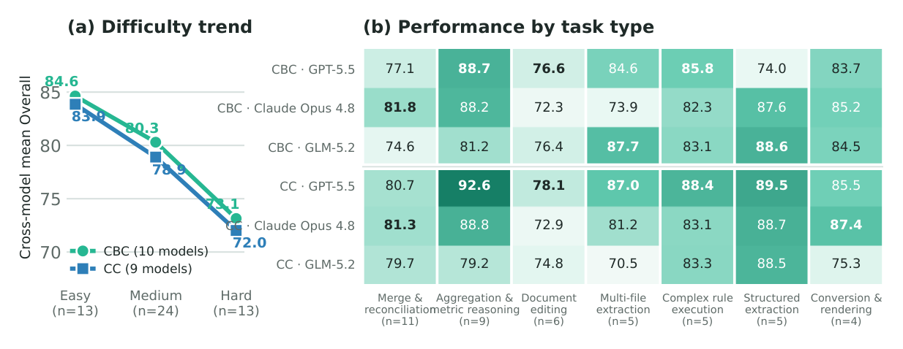
Figure 9. Office results by difficulty and task type. (a) Mean Office score by calibrated difficulty within each harness, averaged over all models with scored runs in that panel. (b) Equal-weight task average for the seven diagnostic task types represented by at least four tasks, shown for the three models discussed in the text. Scores use a 0–100 scale. Bold marks the best score in the full model set for each task type and harness, so a displayed three-model group may contain no bold value. HY-3’s per-task slices in this figure predate its updated Office run, so its contribution to the panel means reflects the earlier scoring.
5.1Token and Turn Efficiency5.1 Token 与轮次效率
Table 7. Per-run averages on the Code subset, by harness: turns (unique assistant messages, including subagent activity), output tokens, and cache-inclusive input tokens, in thousands. Output tokens are comparable across harnesses; input tokens are not, because the two harnesses manage context and caching under different conventions. ‡Claude Opus 4.8’s Claude Code figures come from the modified- instruction run described in Table 6.表 7 报告 Code 子集上助手轮次、输出 token 与输入 token 的单次运行平均。轮次按唯一助手消息计数，主 Agent 之外计入子 Agent 活动。输出 token 跨两个 harness 可比；输入 token 按含缓存口径报告——同时计入缓存上下文读取与新鲜输入——跨 harness 不可比：两个 harness 以不同约定管理上下文与缓存，输入数字只能在同一 harness 列内解读。输出 token 计数同样不应被读作跨模型效率指标：各模型分词器不同，token 不是跨模型恒定的工作单位，下文比较仅作示意，并非严格的跨模型效率排名。
Three observations. First, GPT-5.5 posts top-tier scores on a minimal output budget: its 6.9k
三点观察。第一，GPT-5.5 以极小的输出预算拿到顶级分数：其在 cbc 下的 6.9k
TENCENT WORKBUDDY BENCH Technical Report · 2026
腾讯 WorkBuddy Bench 技术报告 · 2026
tokens per run under cbc is the lowest output budget on that harness, and its 8.7k under cc is the lowest among the standard-protocol runs – against a field that mostly spends 8–29k; the smallest cc output overall belongs to Claude Opus 4.8’s modified-instruction run (4.7k). Second, spend and rank are not aligned: DeepSeek-V4-Flash emits roughly 3.3× GPT-5.5’s output under cc (28.6k vs. 8.7k) while scoring 14.74 points lower (61.89 vs. 76.63), and GLM-5.2’s 77.06 under cc costs 22.0k output tokens against GPT-5.5’s 8.7k for a 0.43-point margin – while Claude Opus 4.8 pairs the highest cbc output (22.3k) with the cbc lead. Third, among standard-protocol runs turn counts vary roughly 2.4× across configurations (18.07 to 44.01 per run), and neither extreme aligns with score: the leanest standard configuration is HY-3 under cc at 18.07 turns for a mid-board 66.26, while the two largest turn counts (DeepSeek-V4-Pro at 44.01 and DeepSeek-V4-Flash at 40.30, both under cbc) belong to the two lowest-scoring cbc configurations. Claude Opus 4.8’s modified-instruction cc run sits below the standard range at 13.2 turns and 4.7k output tokens per run.
token 是该 harness 上最低的输出预算，cc 下的 8.7k 是标准协议运行中最低的——同场大多花 8–29k；全部 cc 运行中最小的输出属于 Claude Opus 4.8 的修改指令运行（4.7k）。第二，开销与排名并不对齐：cc 下 DeepSeek-V4-Flash 的输出约为 GPT-5.5 的 3.3 倍（28.6k 对 8.7k），分数却低 14.74 分（61.89 对 76.63）；GLM-5.2 在 cc 下的 77.06 花 22.0k 输出 token，对 GPT-5.5 的 8.7k，仅多 0.43 分——而 Claude Opus 4.8 把 cbc 最高的输出（22.3k）与 cbc 榜首集于一身。第三，标准协议运行中，轮次数在各配置间相差约 2.4 倍（每次运行 18.07 至 44.01），且两个极端都不与分数对齐：最精简的标准配置是 cc 下的 HY-3，18.07 轮换来中游的 66.26；而两个最大的轮次数（cbc 下的 DeepSeek-V4-Pro 44.01 与 DeepSeek-V4-Flash 40.30）恰属于 cbc 得分最低的两个配置。Claude Opus 4.8 的修改指令 cc 运行低于标准区间，每次运行 13.2 轮、4.7k 输出 token。
Across subsets. The Code budget profile is not universal. Office runs are the leanest – 16–42 turns and 10–30k output tokens per run across models and harnesses – and Web sits in the middle (13–39 turns), while Security is the heaviest track by a wide margin, at 30–89 turns per run.2 The Security extreme is stark: MiniMax-M3 under cbc averages 88.8 turns and roughly 11.1M cache- inclusive input tokens per run for its 74.14. Across all four tracks, GPT-5.5 is consistently the leanest high scorer: under cbc it posts the smallest output budget of any model on every track – 6.9k output tokens per run on Code, 13.5k on Web, 10.2k on Office, and 7.5k on Security.
跨子集。Code 的开销画像并不普适。Office 运行最精简——各模型与 harness 下每次运行 16–42 轮、10–30k 输出 token；Web 居中（13–39 轮）；Security 则以明显差距成为最重的赛道，每次运行 30–89 轮。2 Security 的极端令人瞩目：cbc 下的 MiniMax-M3 平均每次运行 88.8 轮、约 11.1M 含缓存输入 token，换来 74.14。四条赛道中，GPT-5.5 始终是最精简的高分者：cbc 下它在每条赛道上的输出预算都最小——Code 6.9k、Web 13.5k、Office 10.2k、Security 7.5k 输出 token。
6Related Work6 相关工作
We first position Tencent WorkBuddy Bench against existing agent benchmarks in the code, web, office, and security domains; the suite’s own task-construction methodology, subset design, and evaluation harness are detailed in the sections that follow. These are design-time comparisons drawn from the benchmark’s own qualitative analysis of task design, not a head-to-head measured evaluation of agents across these suites.
我们首先把腾讯 WorkBuddy Bench 与代码、Web、办公、安全领域现有的 Agent 基准相对照定位；套件自身的任务构造方法、子集设计与评测 harness 在随后各节详述。这些是基于基准对任务设计的定性分析所作的设计时比较，而非跨套件的 Agent 实测对比。
Code. The Code subset occupies a similar problem space to the SWE-bench family [1, 2] and to library-from-scratch benchmarks such as Commit0 [7], but differs in instruction style and role diversity. Where SWE-bench and SWE-bench Verified supply a detailed GitHub issue – and Commit0 a test-driven specification to implement against – Code tasks are authored as short, colloquial requests, closer to how a teammate phrases an ask than to a filed issue, deliberately leaving implementation detail underspecified; and Code spans five requester roles (developer, algorithm engineer, product manager, QA, ops) across 18 categories beyond bug fixing, rather than a single issue-resolution framing. Contamination resistance is pursued differently across the family: LiveCodeBench [8] relies on problems released after model training cutoffs, whereas Code relies on freshly authored task directories – real upstream commits, clean-room reimplementa- tions, and synthetic workspaces – built and held back from publication until the benchmark’s release, at which point prompts, hidden tests, and gold patches are published in full alongside it. RepoBench [9] and Aider Polyglot [10] target narrower slices of the same space (repository-level completion and templated multi-language exercises), and Terminal-Bench [11] evaluates general terminal-agent competence rather than repository-scoped code changes.
Code。Code 子集占据与 SWE-bench 家族 [1, 2] 及 Commit0 [7] 等从零构建库基准相似的问题空间，但指令风格与角色多样性不同。SWE-bench 与 SWE-bench Verified 提供详尽的 GitHub issue——Commit0 提供以测试驱动的实现规格——而 Code 任务被撰写为简短、口语化的请求，更接近队友提出请求的方式而非已立案的 issue，实现细节有意欠规约；且 Code 横跨五种请求者角色（开发者、算法工程师、产品经理、QA、运维）与超出缺陷修复的 18 个类别，而非单一的 issue 解决框架。抗污染路径在家族内部各异：LiveCodeBench [8] 依赖模型训练截止之后发布的问题，Code 则依赖新撰写的任务目录——真实上游 commit、净室重实现与合成工作区——在基准发布前构建并扣留不发，发布时提示词、隐藏测试与 gold patch 一并全文公开。RepoBench [9] 与 Aider Polyglot [10] 面向同一空间中更窄的切片（仓库级补全与模板化多语言练习）；Terminal-Bench [11] 评测的是通用终端 Agent 能力，而非仓库范围内的代码变更。
TENCENT WORKBUDDY BENCH Technical Report · 2026
腾讯 WorkBuddy Bench 技术报告 · 2026
End-to-end and production coding-agent benchmarks. Vibe Code Bench [12] evaluates zero-to-one web application development from text specifications through browser-agent work- flow tests over deployed applications, making it a close reference point for runnable front-end deliverables. CursorBench [5] pursues a related realism goal by a different route: it traces com- mitted code back to the original agent request from authentic production sessions, so its task distribution is anchored to how one vendor’s users actually work rather than to curated issue text. These choices make both benchmarks important reference points, but they leave different gaps for our setting. Vibe Code Bench focuses on from-scratch application construction, while WorkBuddy Web also covers modification, review, front-end project tests, analysis, and conversion. CursorBench is closed-source, so its task set, category distribution, and any selection bias toward the vendor’s own agent cannot be independently audited, and its representativeness cannot be confirmed to extend beyond that vendor’s user base. Tencent WorkBuddy Bench pursues realism through a distribution-informed route and then releases the result fully open: task categories, shapes, and intents are checked against real usage (Section 3), tasks are reverse-engineered from real artifacts and curated or synthesized to match that distribution rather than released as raw production sessions, and the resulting task directories, environment images, evaluation code, grading tests, and reference solutions are all publicly released and independently auditable.
端到端与生产类编码 Agent 基准。Vibe Code Bench [12] 评测从文本规格出发、在部署应用之上经浏览器 Agent 工作流测试的零到一 Web 应用开发，是可运行前端交付物的近距离参照。CursorBench [5] 以另一条路径追求相近的真实性目标：从真实生产会话出发，把已提交代码回溯到原始 Agent 请求，任务分布因此锚定于某厂商用户的实际工作方式，而非精选的 issue 文本。这些选择使两个基准都成为重要参照，但它们为我们的场景留下不同的缺口。Vibe Code Bench 聚焦从零构建应用；WorkBuddy Web 还覆盖修改、评审、前端项目测试、分析与转换。CursorBench 不开源，其任务集、类别分布及对厂商自家 Agent 的任何选择偏差都无法被独立审计，其代表性也无法确认能延伸到该厂商用户群之外。腾讯 WorkBuddy Bench 走分布对齐的现实性路线，再把结果完全开放：任务类别、形态与意图对照真实使用核查（第 3 章）；任务从真实产物逆向工程，经策展或合成以匹配该分布，而非以原始生产会话的形式发布；所得任务目录、环境镜像、评测代码、评分测试与参考解答全部公开、可独立审计。
Web. Design2Code [3] and Interaction2Code [13] evaluate static and lightly interactive page reproduction from a reference design; FrontendBench [14] extends automatic judging to a broader set of front-end generation tasks; WebArena [4] and VisualWebArena [15] instead evaluate an agent operating an existing browser environment rather than producing a runnable artifact from scratch. Each is strong on one or two axes – static reproduction, interactive generation, browser- agent operation, or code-maintenance realism – but none combines page/UI work, data and chart artifacts, front-end project documents, tests, and analyses, non-scratch lifecycle coverage, runtime interaction/state checks, and rule, LLM/VLM, and agent judging in one evaluation. Table 8 keeps those axes separate rather than reporting task counts, since published benchmark scales are not directly comparable across webpage, interaction, issue, and application-specification units. The comparison is qualitative and self-reported from each benchmark’s own published description, not a measured evaluation.
Web。Design2Code [3] 与 Interaction2Code [13] 评测依据参考设计复现静态与轻交互页面；FrontendBench [14] 把自动评审扩展到更广的前端生成任务集；WebArena [4] 与 VisualWebArena [15] 则评测操作既有浏览器环境的 Agent，而非从零产出可运行产物。每个都只在某一两个轴上见长——静态复现、交互式生成、浏览器 Agent 操作或代码维护真实性——但没有一个把页面/UI 工作、数据与图表产物、前端项目文档、测试与分析、非从零的生命周期覆盖、运行时交互/状态检查以及规则、LLM/VLM 与 agent 评审合并在同一次评测中。表 8 分轴呈现而不报告任务数：已发布基准的规模在网页、交互、issue 与应用规格等单位之间不可直接比较。该比较是定性的、取自各基准自身公开描述，并非实测评估。
Table 8. Web benchmark capability matrix. • = full coverage, ◦= partial coverage, blank = not covered or not applicable. Axes are task-design and verification coverage, not a head-to-head measured evaluation of agent performance; model-judge bias for VLM and agent-judge layers is discussed separately in Section 7.
Office. Recent benchmarks cover complementary parts of office-agent work. Workspace- Bench1.0[16]evaluatestaskswithlarge-scaleheterogeneousfiledependenciesusingfine-grained rubrics across multiple agent harnesses. ClawsBench [17] evaluates capability and safety in
Office。近来的基准覆盖办公 Agent 工作的不同侧面。Workspace-Bench1.0[16] 以细粒度量表评测具有大规模异构文件依赖的任务，横跨多个 Agent harness；ClawsBench [17] 评测能力与安全性，对象是
TENCENT WORKBUDDY BENCH Technical Report · 2026
腾讯 WorkBuddy Bench 技术报告 · 2026
snapshot-restored simulations of Gmail, Calendar, Docs, Drive, and Slack. OdysseyBench [18] targets long-horizon, multi-application workflows over extended interaction histories, while SpreadsheetBench 2 [19] probes end-to-end construction, repair, and visualization in complex multi-sheet workbooks.
Gmail、Calendar、Docs、Drive 与 Slack 的快照还原式模拟。OdysseyBench [18] 面向跨长交互历程的长程多应用工作流；SpreadsheetBench 2 [19] 则探测复杂多工作表工作簿中的端到端构建、修复与可视化。
ClawsBench and OdysseyBench emphasize interaction across multiple applications, Spread- sheetBench 2 focuses on workbook workflows, and Workspace-Bench addresses heterogeneous file dependencies. WorkBuddyBench-Office, the suite’s Office subset, focuses on complete hand- offs in local workspaces containing multiple file formats. Agents must carry source information into deliverables, keep related files and state consistent, and respect execution constraints under CodeBuddy Code or Claude Code. Deterministic rule checks verify files, cross-file relations, state changes, side effects, and execution constraints, while an evidence-grounded LLM Judge scores binary semantic rubrics from fixed post-task evidence. Each task sets its own Rule/Judge weight. These comparisons concern task and verification design; the benchmarks use different task units, environments, and scoring schemes.
ClawsBench 与 OdysseyBench 强调跨多应用的交互；SpreadsheetBench 2 聚焦工作簿工作流；Workspace-Bench 关注异构文件依赖。WorkBuddyBench-Office——本套件的 Office 子集——聚焦在含多种文件格式的本地工作区中完成完整交接：Agent 必须把来源信息带进交付物、保持相关文件与状态一致，并在 CodeBuddy Code 或 Claude Code 下遵守执行约束。确定性规则检查核验文件、跨文件关系、状态变更、副作用与执行约束；以证据为依据的 LLM Judge 从任务后的固定证据为二元语义量表打分。每任务设定自己的 Rule/Judge 权重。这些比较关乎任务与验证设计；各基准的任务单位、环境与打分方案各不相同。
Security. Existing security-agent benchmarks each cover a slice of the red-team side: Cy- bench [20] and NYU CTF Bench [21] score professional-level and competition CTF challenges, InterCode-CTF[22]castsCTFsolvingasinteractivecodingwithexecutionfeedback, CVE-Bench[23] measures autonomous exploitation of real-world web-application CVEs, and Meta’s CyberSecEval series [24, 25] assesses cybersecurity risks and capabilities of the models themselves, from inse- cure code suggestions to offensive-operation assistance. The Security subset differs on two axes: coverage and scoring. Its 60 tasks span red- and blue-team work in a single suite – vulnerability discovery and safe exploitation, malware analysis, security operations, and agent security – rather than CTF or exploitation alone, and every task is scored by a deterministic per-task scoring.py be- hind five anti-cheat layers, with no LLM judge anywhere. Its whitebox discovery tasks are anchored to real, historical CVEs in widely deployed upstream projects, rebuilt as rewritten, sandboxed environments kept out of public training corpora for contamination resistance.
Security。现有安全 Agent 基准各覆盖红队一侧的一个切片：Cybench [20] 与 NYU CTF Bench [21] 对专业级与竞赛级 CTF 挑战打分；InterCode-CTF[22] 把 CTF 求解塑形为带执行反馈的交互式编码；CVE-Bench[23] 度量对真实 Web 应用 CVE 的自主利用；Meta 的 CyberSecEval 系列 [24, 25] 评估模型自身的网络安全风险与能力，从不安全代码建议到攻击行动协助。Security 子集在两个轴上不同：覆盖面与打分。其 60 个任务在单一套件内横跨红蓝两队工作——漏洞发现与安全利用、恶意软件分析、安全运营与 Agent 安全——而非只有 CTF 或利用；且每个任务都由五层反作弊设施之后确定性的任务级 scoring.py 打分，全程无 LLM 评审。其白盒发现任务锚定于广泛部署上游项目中真实的历史 CVE，重建为改写过的沙箱环境，并保持在公开训练语料之外以求抗污染。
What the suite adds. Breadth and framing differentiate the suite, not a new task type. Code pairs repository-scale tasks with five requester roles and an 18-category taxonomy on colloquial asks, not filed-issue prompts, resistant to searchable-prompt and leaked-answer contamination by construction through freshly authored task directories held back until release. Web unifies the task-type, lifecycle-mode, interaction/state, and judge axes above in one family, combining rule checks, LLM/VLM judgment, and agent-judge verification over running front-end artifacts. Office treats mixed-format, multi-artifact workflows as complete handoffs, measuring machine- checkable workspace state and semantic deliverable quality through separately retained Rule and Judge channels. Security covers the red- and blue-team spectrum under fully deterministic per-task scoring, in a domain where public benchmarks remain scarce. Resistance to searchable prompts and leaked tests or answers rests on freshly authored task directories held back until release and by-construction design; distribution-informed construction rests on distribution- matched tasks, released fully open – task directories, environment images, evaluation code, grading tests, and reference solutions all public – and so independently auditable in full where closed vendors cannot be. These remain the benchmark’s own design-time positioning claims, not a measured comparison of agent performance across the compared suites.
套件增益何在。区分这套套件的是广度与取材框架，而非新的任务类型。Code 以口语请求配以仓库尺度任务、五种请求者角色与 18 类分类体系，而非已立案的 issue 提示，并借由扣留至发布才公开的新撰写任务目录，从构造上抵御可检索提示词与答案泄漏污染。Web 把任务类型、生命周期模式、交互/状态与评审各轴统一在一个家族中，在运行中的前端产物上结合规则检查、LLM/VLM 评审与 agent-judge 验证。Office 把混合格式、多产物的工作流当作完整交接，通过分别保留的 Rule 与 Judge 通道度量机器可查的工作区状态与语义交付物质量。Security 在完全确定性的任务级打分下覆盖红蓝两队谱系——这一领域的公开基准仍属稀缺。对可检索提示词与泄漏测试或答案的抵御，依托扣留至发布的新撰写任务目录与 by-construction 设计；分布对齐构造依托分布匹配的任务，全部开放发布——任务目录、环境镜像、评测代码、评分测试与参考解答全部公开——因而可被完整独立审计，封闭厂商则做不到。这些仍是基准自身的设计时定位主张，而非跨套件 Agent 表现的实测比较。
7Limitations and Conclusion7 局限与结论
TENCENT WORKBUDDY BENCH Technical Report · 2026
腾讯 WorkBuddy Bench 技术报告 · 2026
This section discusses current limitations of Tencent WorkBuddy Bench as described in this report, and the near-term work planned to address them.
本节讨论本报告所述腾讯 WorkBuddy Bench 当前的局限，以及计划用于解决这些局限的近期工作。
• One leaderboard cell uses a modified instruction setup. All seven models are scored under both harnesses on all four tracks. The one comparability caveat is Claude Opus 4.8’s CodescoreunderClaudeCode: asnotedinTable6, ontopofthedisabledAskUserQuestion tool, an explicit do-not-ask, complete-in-one-pass instruction was added for that run, so its setup differs slightly from the other runs, and its score is reported alongside – but not folded into – the Code harness-shift aggregate in Section 5.
• 一个排行榜单元格使用修改指令设置。全部七个模型都在两个 harness 下、全部四个赛道上打分。唯一的可比性保留是 Claude Opus 4.8 在 Claude Code 下的 Code 分数：如表 6 所注，除禁用 AskUserQuestion 工具外，该次运行还追加了“不要提问、一次性完成”的显式指令，设置与其他运行略有不同；其分数与 Code 的 harness 位移聚合并列报告，但不并入第 5 章的该聚合。
• Single-language emphasis in Code. The Code subset’s open release is dominated by Python tasks; cross-language coverage is limited to a small number of tasks that port tar- get behavior from JavaScript, TypeScript, or Rust projects into Python. Findings in this report about coding difficulty, the coding-versus-data/algorithm gap, and harness diver- gence should not be assumed to generalize to other programming languages or ecosystems without further evaluation.
• Code 中的单语言侧重。Code 子集的开放发布以 Python 任务为主；跨语言覆盖仅限于把目标行为从 JavaScript、TypeScript 或 Rust 项目移植为 Python 的少量任务。本报告关于编码难度、编码与数据/算法差距以及 harness 分歧的结论，未经进一步评估不应假定可推广到其他编程语言或生态。
• Open release creates post-release contamination exposure. Tencent WorkBuddy Bench is released fully open – task directories, environment images, evaluation code, grading tests, and reference solutions are all public, so that external readers can independently re-run and audit individual task outcomes, not just reproduce the pipeline described earlier in this report. The cost of that openness is that published task content is, from the moment of release, exposed to being scraped into future model training data, which can erode contamination resistance over time. This is mitigated, not eliminated, by dataset versioning – future revisions can retire or replace tasks that show contamination symptoms – rather
• 开放发布带来发布后的污染暴露。腾讯 WorkBuddy Bench 完全开放发布——任务目录、环境镜像、评测代码、评分测试与参考解答全部公开，外部读者可独立重跑并审计单个任务的结果，而不只是复现本报告前文所述的流程。开放的代价是：已发布任务内容自发布之时起即暴露于被爬入未来模型训练数据的风险，可能随时间侵蚀抗污染能力。这一点由数据集版本管理缓解而非消除——未来修订可退役或替换显现污染症状的任务——而非
than by withholding task content.靠扣留任务内容。
• Judge-based components carry model-judge bias. Web scoring combines rule-based checkswithLLM/VLMandagent-judgerubricitemsoverevidencefromtherunningfront-end artifact; Office combines deterministic rule checks with an LLM Judge over fixed post-task evidence; and Code additionally computes a diagnostic, weighted LLM-judge score across several dimensions that is not counted in the headline metric. Office retains rule-check outcomes independently, so the Judge cannot alter them, but its semantic-rubric scores remain subject to model-judge bias. More generally, model judges may favor response styles they find familiar or legible, independent of task correctness – a risk this report has not separately quantified.
• 基于评审的组件带有模型评审偏差。Web 打分把规则检查与 LLM/VLM 及 agent-judge 量表条目结合，后者基于运行中前端的证据；Office 把确定性规则检查与基于任务后固定证据的 LLM Judge 结合；Code 另计算一个跨若干维度的诊断性加权 LLM 评审分数，不计入头条指标。Office 独立保留规则检查结果，Judge 无法改动，但其语义量表分数仍受模型评审偏差影响。更一般地，模型评审可能偏爱其觉得熟悉或易读的回答风格，而与任务正确性无关——本报告尚未单独量化这一风险。
• Scores are tied to specific serving and harness conditions. The HY (Hunyuan) end- point used in this evaluation is served first-party by its provider, while all other models are accessed through third-party serving endpoints, whose parameter configuration and request handling may affect metrics. Likewise, results are tied to the specific builds of the two harnesses used in this evaluation, and metrics may shift as harness versions evolve (Section 4).
• 分数与特定的服务与 harness 条件绑定。本评测使用的 HY（Hunyuan）端点由其提供方第一方服务，其余模型经第三方服务端点访问，后者的参数配置与请求处理可能影响指标。同样，结果与本次评测所用两个 harness 的具体构建绑定，指标可能随 harness 版本演进而变动（第 4 章）。
• Office istext-first. ThecurrentOfficerelease coverslocal, mixed-formatworkflowsbutdoes notrequireOCR,vision-languagemodels, pixel-levellayoutjudgment, ornativedesktop-GUI interaction. Officeresultsthereforeapplytofilehandling, stateupdates, andevidence-based workflow completion, not to visual perception or GUI operation.
• Office 以文本为主。当前 Office 发布覆盖本地、混合格式工作流，但不要求 OCR、视觉语言模型、像素级版面判断或原生桌面 GUI 交互。Office 结果因此适用于文件处理、状态更新与基于证据的工作流完成，而不适用于视觉感知或 GUI 操作。
TENCENT WORKBUDDY BENCH Technical Report · 2026
腾讯 WorkBuddy Bench 技术报告 · 2026
Near-term work focuses on calibration: continuing Web rubric calibration, and, where feasible, bringing the one modified-instruction configuration (Claude Opus 4.8 on Code under Claude Code) under the standard instruction protocol.
近期工作聚焦校准：继续 Web 量表的校准，并在可行处把唯一的修改指令配置（Claude Opus 4.8 在 Claude Code 下的 Code）纳入标准指令协议。
This report has described Tencent WorkBuddy Bench as released: four subsets sharing one task-directory format, one admission protocol, and one execution harness, together with its leader- board and the limitations stated above. These limitations and scope boundaries are the ones we consider material enough to state explicitly, not an exhaustive list. The suite is released fully open – task directories, environment images, evaluation code, grading tests, and reference solutions
本报告按发布状态描述了腾讯 WorkBuddy Bench：共享同一任务目录格式、同一准入协议与同一执行 harness 的四个子集，连同其排行榜与上述局限。这些局限与范围边界是我们认为实质到必须明言的部分，并非穷尽清单。套件完全开放发布——任务目录、环境镜像、评测代码、评分测试与参考解答
are all public for offline third-party testing and audit – and the near-term trajectory beyond this revision is a public leaderboard with expanding model coverage across both harnesses.
全部公开，供第三方离线测试与审计——本次修订之后的近期路线，是覆盖两个 harness、模型覆盖面不断扩大的公开排行榜。
Contributors贡献者
Siqi Cai1*, Shaopeng Chen4*, Xiang Fei1*, Yong Mao1*, Zihan Xu1*, Zhiheng Lyu3*, Zhijian Shao2*, Yuchen Shi1, Shuwen Zhang1, Chaofan Qiu1, Linjie Che3, Xiaoxi Zhao3, Feng Wu3, Kai Zhang3, Chaofan Zhu3, Yubin Qi3, Xiaoyun Liang3, Peijie Dong3, Yunhao Zhang3, Yuanjie Zhu, Ling Jiang2, Xianjun Zhang2, Zhehang Chu2, Anyuan Sang2, Zhen Feng2, Sen Nie2, Shi Wu2, Yuanzhen Xu4, Xin Li4, Ning Yang4, Zhiqiang Dong4, Hande Dong3, Qiang Lin3, Yi Liu3, Yunsheng Wu1, Ke Li1†, Xing Sun1
Siqi Cai1*, Shaopeng Chen4*, Xiang Fei1*, Yong Mao1*, Zihan Xu1*, Zhiheng Lyu3*, Zhijian Shao2*, Yuchen Shi1, Shuwen Zhang1, Chaofan Qiu1, Linjie Che3, Xiaoxi Zhao3, Feng Wu3, Kai Zhang3, Chaofan Zhu3, Yubin Qi3, Xiaoyun Liang3, Peijie Dong3, Yunhao Zhang3, Yuanjie Zhu, Ling Jiang2, Xianjun Zhang2, Zhehang Chu2, Anyuan Sang2, Zhen Feng2, Sen Nie2, Shi Wu2, Yuanzhen Xu4, Xin Li4, Ning Yang4, Zhiqiang Dong4, Hande Dong3, Qiang Lin3, Yi Liu3, Yunsheng Wu1, Ke Li1†, Xing Sun1
1Youtu Lab · 2Keen Security Lab · 3Workbuddy · 4Yunding Security Lab
1Youtu Lab · 2Keen Security Lab · 3Workbuddy · 4Yunding Security Lab
*These authors contributed equally to this work. The author order was determined alphabetically. †Project Lead.
*这些作者对本工作贡献相同，作者排序按字母顺序确定。†项目负责人。
References参考文献
[1] Carlos E. Jimenez, John Yang, Alexander Wettig, Shunyu Yao, Kexin Pei, Ofir Press, and
[REF] 原样保留英文文献列表
Karthik Narasimhan. SWE-bench: Can language models resolve real-world github issues? In International Conference on Learning Representations (ICLR), 2024. URL https://arxiv. org/abs/2310.06770.
[REF] 原样保留英文文献列表
[2] OpenAI. Introducing SWE-bench verified. OpenAI blog, 2024. URL https://openai.com/
[REF] 原样保留英文文献列表
index/introducing-swe-bench-verified/.[REF] 原样保留英文文献列表
[3] Chenglei Si, Yanzhe Zhang, Zhengyuan Yang, Ruibo Liu, and Diyi Yang. Design2code: How
[REF] 原样保留英文文献列表
far are we from automating front-end engineering? In Proceedings of the Association for Computational Linguistics (ACL), 2024. URL https://arxiv.org/abs/2403.03163.
[REF] 原样保留英文文献列表
[4] Shuyan Zhou, Frank F. Xu, Hao Zhu, Xuhui Zhou, Robert Lo, Abishek Sridhar, Xianyi Cheng,
[REF] 原样保留英文文献列表
Tianyue Ou, Yonatan Bisk, Daniel Fried, Uri Alon, and Graham Neubig. WebArena: A realistic web environment for building autonomous agents. In International Conference on Learning Representations (ICLR), 2024. URL https://arxiv.org/abs/2307.13854.
[REF] 原样保留英文文献列表
[5] Cursor. How we compare model quality in Cursor. Cursor blog, 2026. URL https://cursor.
[REF] 原样保留英文文献列表
com/blog/cursorbench.[REF] 原样保留英文文献列表
[6] Harbor Framework Team. Harbor: A framework for evaluating and optimizing agents and
[REF] 原样保留英文文献列表
models in container environments. GitHub repository, Laude Institute, 2026. URL https: //github.com/laude-institute/harbor. DOI: 10.5281/zenodo.20953922.
[REF] 原样保留英文文献列表
TENCENT WORKBUDDY BENCH Technical Report · 2026
腾讯 WorkBuddy Bench 技术报告 · 2026
[7] Wenting Zhao, Nan Jiang, Celine Lee, Justin T. Chiu, Claire Cardie, Matthias Gallé, and
[REF] 原样保留英文文献列表
Alexander M. Rush. Commit0: Library generation from scratch, 2024. URL https://arxiv. org/abs/2412.01769.
[REF] 原样保留英文文献列表
[8] Naman Jain, King Han, Alex Gu, Wen-Ding Li, Fanjia Yan, Tianjun Zhang, Sida Wang, Ar-
[REF] 原样保留英文文献列表
mando Solar-Lezama, Koushik Sen, and Ion Stoica. LiveCodeBench: Holistic and contami- nation free evaluation of large language models for code, 2024. URL https://arxiv.org/ abs/2403.07974.
[REF] 原样保留英文文献列表
[9] Tianyang Liu, Canwen Xu, and Julian J. McAuley. RepoBench: Benchmarking repository-
[REF] 原样保留英文文献列表
level code auto-completion systems. In International Conference on Learning Representa- tions (ICLR), 2024. URL https://arxiv.org/abs/2306.03091.
[REF] 原样保留英文文献列表
[10] PaulGauthier. Aiderpolyglotbenchmark. Aiderdocumentation, 2024. URLhttps://aider.
[REF] 原样保留英文文献列表
chat/docs/leaderboards/.[REF] 原样保留英文文献列表
[11] Terminal-Bench Team. Terminal-bench: A benchmark for ai agents in terminal environ-
[REF] 原样保留英文文献列表
ments. Project website, 2024. URL https://www.tbench.ai/.
[REF] 原样保留英文文献列表
[12] Hung Tran, Langston Nashold, Rayan Krishnan, Antoine Bigeard, and Alex Gu. Vibe Code
[REF] 原样保留英文文献列表
Bench: Evaluating AI models on end-to-end web application development. In ACM Con- ference on AI and Agentic Systems (ACM CAIS), 2026. doi: 10.1145/3786335.3813180. URL https://arxiv.org/abs/2603.04601.
[REF] 原样保留英文文献列表
[13] Jingyu Xiao, Yuxuan Wan, Yintong Huo, Zixin Wang, Xinyi Xu, Wenxuan Wang, Zhiyao Xu,
[REF] 原样保留英文文献列表
Yuhang Wang, and Michael R. Lyu. Interaction2Code: Benchmarking MLLM-based interac- tive webpage code generation from interactive prototyping, 2024. URL https://arxiv. org/abs/2411.03292.
[REF] 原样保留英文文献列表
[14] Hongda Zhu, Yiwen Zhang, Bing Zhao, Jingzhe Ding, Siyao Liu, Tong Liu, Dandan Wang,
[REF] 原样保留英文文献列表
Yanan Liu, and Zhaojian Li. FrontendBench: A benchmark for evaluating llms on front-end development via automatic evaluation, 2025. URL https://arxiv.org/abs/2506.13832.
[REF] 原样保留英文文献列表
[15] Jing Yu Koh, Robert Lo, Lawrence Jang, Vikram Duvvur, Ming Chong Lim, Po-Yu Huang, Gra-
[REF] 原样保留英文文献列表
ham Neubig, Shuyan Zhou, Ruslan Salakhutdinov, and Daniel Fried. VisualWebArena: Eval- uating multimodal agents on realistic visual web tasks. In Proceedings of the Association for Computational Linguistics (ACL), 2024. URL https://arxiv.org/abs/2401.13649.
[REF] 原样保留英文文献列表
[16] Zirui Tang, Xuanhe Zhou, Yumou Liu, Linchun Li, Yukai Wu, Weizheng Wang, Hongzhang
[REF] 原样保留英文文献列表
Huang, Wei Zhou, Jun Zhou, Jiachen Song, Shaoli Yu, Jinqi Wang, Zihang Zhou, Hongyi Zhou, Yuting Lv, Jinyang Li, Jiashuo Liu, Ruoyu Chen, Chunwei Liu, GuoLiang Li, Jihua Kang, and Fan Wu. Workspace-Bench 1.0: Benchmarking AI agents on workspace tasks with large- scale file dependencies, 2026. URL https://arxiv.org/abs/2605.03596.
[REF] 原样保留英文文献列表
[17] Xiangyi Li, Kyoung Whan Choe, Yimin Liu, Xiaokun Chen, Chujun Tao, Bingran You, Wenbo
[REF] 原样保留英文文献列表
Chen, Zonglin Di, Jiankai Sun, Shenghan Zheng, Jiajun Bao, Yuanli Wang, Weixiang Yan, Yiyuan Li, and Han-chung Lee. ClawsBench: Evaluating capability and safety of LLM produc- tivity agents in simulated workspaces, 2026. URL https://arxiv.org/abs/2604.05172.
[REF] 原样保留英文文献列表
TENCENT WORKBUDDY BENCH Technical Report · 2026
腾讯 WorkBuddy Bench 技术报告 · 2026
[18] Weixuan Wang, Dongge Han, Daniel Madrigal Diaz, Jin Xu, Victor Rühle, and Saravan Raj-
[REF] 原样保留英文文献列表
mohan. OdysseyBench: Evaluating LLM agents on long-horizon complex office application workflows, 2025. URL https://arxiv.org/abs/2508.09124.
[REF] 原样保留英文文献列表
[19] Jian Zhu, Yuzheng Zhang, Zeyao Ma, Bohan Zhang, Armin Schoepf, Daniel Woloch, Pe-
[REF] 原样保留英文文献列表
terYiliuWang, GuangyuRobertYang, SamuelJacob, SiddharthNagisetty, AbhiramChundru, Jean Lin, Spencer Mateega, and Jing Zhang. SpreadsheetBench 2: Evaluating agents on end-to-end business spreadsheet workflows, 2026. URL https://arxiv.org/abs/2606. 29955.
[REF] 原样保留英文文献列表
[20] Andy K. Zhang, Neil Perry, Riya Dulepet, Joey Ji, Celeste Menders, Justin W. Lin, Eliot Jones,
[REF] 原样保留英文文献列表
Gashon Hussein, Samantha Liu, Donovan Jasper, et al. Cybench: A framework for evaluat- ing cybersecurity capabilities and risks of language models. In International Conference on Learning Representations (ICLR), 2025. URL https://arxiv.org/abs/2408.08926.
[REF] 原样保留英文文献列表
[21] Minghao Shao, Sofija Jancheska, Meet Udeshi, Brendan Dolan-Gavitt, Haoran Xi, Kimberly
[REF] 原样保留英文文献列表
Milner, Boyuan Chen, Max Yin, Siddharth Garg, Prashanth Krishnamurthy, Farshad Khor- rami, Ramesh Karri, and Muhammad Shafique. NYU CTF Bench: A scalable open-source benchmark dataset for evaluating LLMs in offensive security. In Advances in Neural Infor- mation Processing Systems (NeurIPS), Datasets and Benchmarks Track, 2024. URL https: //arxiv.org/abs/2406.05590.
[REF] 原样保留英文文献列表
[22] John Yang, Akshara Prabhakar, Karthik Narasimhan, and Shunyu Yao. InterCode: Standard-
[REF] 原样保留英文文献列表
izing and benchmarking interactive coding with execution feedback. In Advances in Neu- ral Information Processing Systems (NeurIPS), Datasets and Benchmarks Track, 2023. URL https://arxiv.org/abs/2306.14898.
[REF] 原样保留英文文献列表
[23] Yuxuan Zhu, Antony Kellermann, Dylan Bowman, Philip Li, Akul Gupta, Adarsh Danda,
[REF] 原样保留英文文献列表
Richard Fang, Conner Jensen, Eric Ihli, Jason Benn, Jet Geronimo, Avi Dhir, Sudhit Rao, Kaicheng Yu, Twm Stone, and Daniel Kang. CVE-Bench: A benchmark for AI agents’ ability to exploit real-world web application vulnerabilities. In International Conference on Machine Learning (ICML), 2025. URL https://arxiv.org/abs/2503.17332.
[REF] 原样保留英文文献列表
[24] Manish Bhatt, Sahana Chennabasappa, Yue Li, Cyrus Nikolaidis, Daniel Song, Shengye Wan,
[REF] 原样保留英文文献列表
Faizan Ahmad, Cornelius Aschermann, Yaohui Chen, Dhaval Kapil, David Molnar, Spencer Whitman, and Joshua Saxe. CyberSecEval 2: A wide-ranging cybersecurity evaluation suite for large language models, 2024. URL https://arxiv.org/abs/2404.13161.
[REF] 原样保留英文文献列表
[25] Shengye Wan, Cyrus Nikolaidis, Daniel Song, David Molnar, James Crnkovich, Jayson Grace,
[REF] 原样保留英文文献列表
Manish Bhatt, Sahana Chennabasappa, Spencer Whitman, Stephanie Ding, Vlad Ionescu, Yue Li, and Joshua Saxe. CyberSecEval 3: Advancing the evaluation of cybersecurity risks and capabilities in large language models, 2024. URL https://arxiv.org/abs/2408. 01605.
[REF] 原样保留英文文献列表
Table 1
| Subset | Domain | Scale | Metric |
|---|---|---|---|
| Code | Repository-level SWE | 80 tasks | Hidden-test score per run |
| Web | Front-end / GUI | 70 tasks | Rubric scoring (rule / LLM-VLM / agent) |
| Office | Office data & file workflows | 50 tasks | Task-specific Rule/Judge blend |
| Security | Red- & blue-team security | 60 tasks | Programmatic scoring.py (no LLM |
| judge) |
Table 2
| Component | Status | |
|---|---|---|
| Task-directory skeleton and packaging convention (this | Released | |
| section) | ||
| Task prompts and instruction text | Released | |
| Workspace/environment images for offline third-party test- | Released | |
| ing | ||
| Evaluation harness and score-aggregation code | Released | |
| Grading tests (the verifier held out from the agent at solve | Released | |
| time) | ||
| Gold patches and reference solutions | Released | |
| Per-task and aggregate scores, and the public leaderboard | Released | |
| User data of any kind | Not used at all – none exists | |
| 3 | The Benchmarkf | to release |
Table 3
| Family | Definition | Count | Example |
|---|---|---|---|
| A | Real OSS snapshot at an upstream | 34 | Django, Flask, pytest, Black, |
| commit; the gold patch is the actual | Pydantic, httpx, Celery (∼18 | ||
| human fix | repositories) | ||
| B | Clean-room *_like reimplementa- | 24 | fastapi_like/openapi.py |
| tion of a target library’s public API, | stub rather than FastAPI itself | ||
| no original code copied; includes the | |||
| 4 cross-language ports (JS/TS/Rust | |||
| originals in Python) | |||
| C | Fully synthetic workspace with CSV/J- | 22 | algo workspaces (12) and pm |
| SON fixtures, authored to exercise a | data workspaces (10) | ||
| role’s workflow directly |
Table 4
| Dimension | Breakdown |
|---|---|
| Roles | developer 30 · algo 19 · pm 15 · ops 10 · qa 6 |
| Difficulty (editorial) | easy 7 · medium 31 · hard 42 |
| Difficulty (L-ladder) | L2 4 · L3 27 · L4 40 · L5 9 (centered on L4) |
| Admission gate | baseline ≤0.3, oracle (gold patch) = 1.0 against hidden tests |
| (a) Code usage domains | (b) Web task categories (c) Web lifecycle modes |
| 80 | 70 70 |
| tasks | tasks tasks |
| Feature & API 18 | Page interaction 21 From Scratch 35 |
| Code eng. & understanding 18 | Data visualization 15 Bug fix 8 |
| Test & reliability 12 | Visual design 9 Feature extension 8 |
| Algorithm engineering 12 | Analysis & reporting 7 Review & analysis 7 |
| Bug fix 10 | Code & testing 7 Test generation 7 |
| Product & data analytics 10 | Page implementation 6 Format conversion 5 |
| Doc conversion 5 |
Table 5
| Block Role | Tasks Discipline |
|---|---|
| Vulnerability discovery & exploitation Security researcher | 32 Red |
| Malware analysis Anti-virus engineer | 14 Blue |
| Security operations SOC analyst / detection eng. | 8 Blue |
| Agent security AI red-team | 6 Red |
| Difficulty skews hard by design. | |
| 1 TASK CONSTRUCTION 2 SECURITY TASK TYPES | 3 EVALUATION |
| Vulnerabilities From Real to RED Discovery, TEAM safe exploitation, and agent assessment BLUE Detection, TEAM defense | AGENT OUTPUT |
| Security Reproducible Tasks 38 TASKS hardening 22 TASKS | PoC structured / flag · findings IOC / YARA |
| CONCRETE ORIGINS 01 WHITEBOX 02 BLACKBOX BINARY MALWARE | SOC report |
| Historical CVEs + authored scenarios SOURCE AUDIT EXPLOITATION 05 ANALYSIS | |
| CVE audit → PoC ELF · services | ISOLATED DOCKER |
| 03 WEB EXPLOITATION 04 AGENT SECURITY | per-task deterministic |
| Reversing · IOC · YARA | scoring · PoC · matching |
| ROLE-PLAYED REQUESTS Named exploit Injection 14 TASKS | report scoring |
| Professional voice · diagnosis withheld techniques tool misuse | |
| SECURITY | |
| SECURITY RESEARCHER AI RED-TEAM 06 OPERATIONS | |
| Locate safely reproduce vulnerable behavior paths Probe Structured tool-using findings agents | NUMERIC REWARD |
| SELF-CONTAINED TASKS | Task-specific evidence & |
| Instruction · workspace · verifier SOC triage · detection | correctness average over 3 |
| rules 8 TASKS | independent runs |